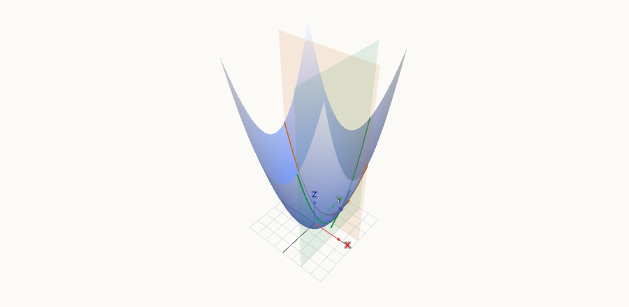
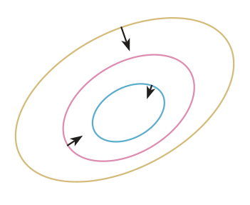
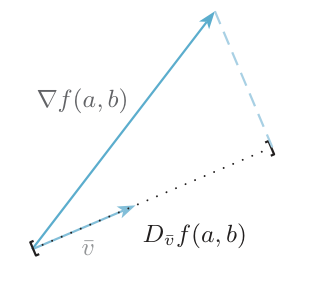
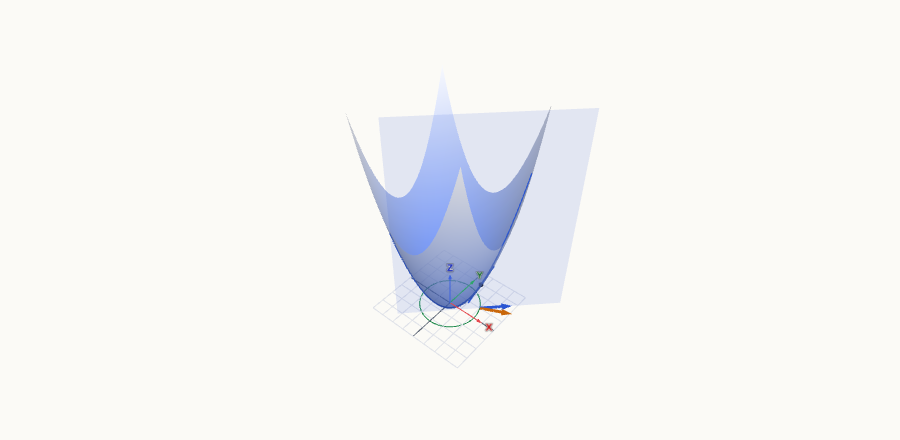

Módulo IV · Funciones de varias variables · Tema 4.3
Derivadas parciales, gradiente, derivadas de orden superior y direccional
Cómo medir el cambio de una función de varias variables: derivar «una variable cada vez», reunir esas derivadas en el vector gradiente, derivar otra vez (matriz Hessiana) y calcular la pendiente en cualquier dirección y la dirección de máximo crecimiento.
Libro oficial: Cálculo para Ingenieros, §4.3-4.5 (pp. 168-183)Ejercicios: E Ej. 4.25–4.44Examen: 9 problemas de X⏱ ~7 h de estudio
U oficial
S Stewart
L Larson
E ejercicios
P propio
X exámenes
— pasa el ratón (o toca) por cada etiqueta para ver libro y página; en pantallas anchas aparecen en el margen derecho.
La idea del tema en una frase
Estás de pie en una ladera. Si das un paso hacia el este, subes o bajas una cierta cantidad; si das uno hacia el norte, otra. Esas dos «pendientes» son las derivadas parciales; la pareja ordenada de ambas es el gradiente, que apunta cuesta arriba. Derivar otra vez da la Hessiana (cómo cambian las pendientes). Y si en lugar de este o norte caminas en una dirección cualquiera, la pendiente es la derivada direccional, que se calcula con un producto escalar. Nada nuevo en el cálculo: casi todo se reduce a derivar como en una variable, tratando las demás variables como constantes.
Si solo tienes un rato, llévate esto. El resto de la página lo desarrolla con ejemplos y ejercicios.
Método en 4 pasos
Traduce la pregunta: ¿te piden parciales o gradiente en un punto, la Hessiana, una derivada direccional, la dirección de máximo crecimiento o los puntos críticos ($\nabla f=0$)?
Deriva variable a variable: las demás son constantes (cadena, producto, cociente) y el punto se sustituye al final. Si la función cambia de fórmula en el punto, usa la definición con $h\to0$.
Reúne: gradiente = vector de parciales; Hessiana = tabla $n\times n$ de segundas (con tres variables, $3\times3$); direccional = $\nabla f\cdot v$ con $v$ unitario y parciales continuas.
Comprueba: las cruzadas coinciden (Schwarz), $D_vf\le\|\nabla f\|$, y en los puntos críticos todas las componentes valen $0$ a la vez.
Qué hago según lo que piden
¿«Calcule el gradiente»? $\to$ todas las parciales, en orden, como vector.
¿«Puntos críticos»? $\to$ $\nabla f=0$: factoriza y separa casos.
¿«Matriz Hessiana»? $\to$ primeras, segundas, y a una tabla.
¿«Derivada según el vector $w$»? $\to$ normaliza $w$ y haz $\nabla f\cdot v$.
¿«Dirección de máximo crecimiento»? $\to$ $\frac{\nabla f}{\|\nabla f\|}$, con valor $\|\nabla f\|$.
Derivada direccional con parciales continuas (Teor. 4.2).
Máximo $\|\nabla f\|$ en $\frac{\nabla f}{\|\nabla f\|}$; mínimo $-\|\nabla f\|$
Dirección de máximo y mínimo crecimiento (Teor. 4.3).
Qué cae
En los exámenes resueltos hay 9 problemas de este tema: gradiente en un punto (4), puntos críticos y extremos (4), Hessiana (1) y máximo crecimiento (1); un problema puede tener varios apartados. En el libro de ejercicios son E 4.25-4.44. Tabla completa por tipo: pestaña Examen.
U pp.168-183P
Camino de estudio: elige tu nivel
Empieza por «Mínimo»; luego «Completo» y, para nota alta, «Reto». Marca cada ejercicio al terminarlo.
Los apartados de derivada parcial (1), gradiente (2), Hessiana (3) y derivada direccional (4), y el mapa de decisión (apartado 5).
Un ejercicio de cada tipo:
E 4.28 (gradiente con cadena), E 4.32 (puntos críticos), E 4.33 (parciales en un punto especial), E 4.37 (Hessiana), E 4.43 (máximo crecimiento), Examen 2 (gradiente y críticos), Examen 3 (gradiente de un logaritmo) y Examen 5 (Hessianas).
Todo el tema (desmarca «Solo lo esencial»), con los interactivos.
E 4.25-4.44, los 9 exámenes, los ejemplos propios y todas las prácticas.
🟣 Reto · ≈ +1,5 h
P3 y P4 (parciales o direccionales que existen sin que valga la fórmula del gradiente), E 4.34, E 4.38 y E 4.39 (cruzadas distintas) y las prácticas ★★.
Verás solo lo esencial; desmarca para ver todo.
0Antes de empezar U pp.168-179
Qué necesitas saber ya
Derivación de una variable (Tema 2): reglas de la suma, del producto, del cociente y de la cadena, y la tabla de derivadas. Es la herramienta de todo este tema.
Límites y continuidad en dos variables (tema 4.2): caminos y polares; hacen falta en las funciones «a trozos» (E 4.33, 4.34, 4.38).
Curvas de nivel (tema 4.2): se usan para entender la Propiedad 4.1.
Mapa del tema: qué se pide en los ejercicios y en el examen
(A) Gradiente en un punto (la pregunta más repetida: E 4.28, 4.29, 4.31; X 2017-2019). (B) Hessiana en un punto, casi siempre de tres sumandos «fáciles» (E 4.36-4.37; X 2018). (C) Parciales en un punto especial de una función «a trozos», con la definición (E 4.33, 4.38). (D) Derivada direccional y dirección de máximo crecimiento (E 4.40-4.44; X electrónica). (E) Puntos críticos: resolver $\nabla f=0$ (E 4.32; X 2019). Los planos tangentes y la clasificación de extremos llegan en el Tema 5, pero necesitan el gradiente y la Hessiana de aquí.
1Derivada parcial U pp.168-173
Lo que vas a aprender. a derivar respecto de una variable con las demás congeladas, a leer la parcial como pendiente de un corte de la gráfica y a usar la definición con límite en un punto donde la fórmula cambia.
Cómo lo reconoces: «Calcule las derivadas parciales», «calcule $\frac{\partial f}{\partial x}(a,b)$», «recta tangente al corte con el plano $x=a$».
Qué haces: Derivar respecto de una variable, tratando las demás como constantes (cadena, producto, cociente); sustituir el punto al final. En un punto especial de una función a trozos, aplicar la definición con $h\to0$.
Ejemplo mínimo: $\frac{\partial}{\partial x}\big(x^2y^3\big)=2xy^3$: $y^3$ es una constante que multiplica.
Idea intuitiva · congelar una variable
Una función $g(x,y)$ es una ladera con dos direcciones de movimiento. Si congelas $y=b$ y solo dejas que cambie $x$, recorres un «corte» de la ladera: una curva que ya es la gráfica de una función de una variable, $h(x)=g(x,b)$. La pendiente de ese corte en $x=a$ es la derivada parcial respecto de $x$. Lo mismo con $y$ y $x=a$ fijo. Por eso la derivada parcial «no es más que la derivada que ya conoces» (U p.169): el truco es solo decidir qué variable se mueve y cuál se trata como un número.
U p.169
Definiciones 4.8 y 4.9 · derivadas parciales
Sea $g:D\subset\mathbb R^2\to\mathbb R$, $D$ abierto, y $(a,b)\in D$. La derivada parcial de $g$ respecto de $x$ en $(a,b)$ es
$$\frac{\partial g}{\partial x}(a,b)=\lim_{h\to0}\frac{g(a+h,b)-g(a,b)}{h}$$
y la derivada parcial respecto de $y$ es
$$\frac{\partial g}{\partial y}(a,b)=\lim_{h\to0}\frac{g(a,b+h)-g(a,b)}{h},$$
siempre que el límite exista. Notaciones: $\frac{\partial f}{\partial x}=f_x=D_1f$ y $\frac{\partial f}{\partial y}=f_y=D_2f$. Si existe en cada punto de un conjunto $A$, se habla de la función derivada parcial en $A$. Para $n$ variables, $\frac{\partial f}{\partial x_k}(a_1,\dots,a_n)$ es la derivada de $x_k\mapsto f(a_1,\dots,x_k,\dots,a_n)$ en $x_k=a_k$.
U pp.169-173
Ejemplo 4.22 de U · por definición, $g(x,y)=xy$ en $(1,2)$
$\dfrac{\partial g}{\partial x}(1,2)=\lim_{h\to0}\dfrac{(1+h)\cdot2-1\cdot2}{h}=\lim_{h\to0}\dfrac{2h}{h}=2$ y $\dfrac{\partial g}{\partial y}(1,2)=\lim_{h\to0}\dfrac{1\cdot(2+h)-2}{h}=1$.
U p.170
Interpretación geométrica
$(1,0,\frac{\partial g}{\partial x}(a,b))$ es un vector director de la recta tangente a la curva $z=g(x,b)$ (corte de la gráfica con el plano $y=b$); y $(0,1,\frac{\partial g}{\partial y}(a,b))$ lo es de la tangente a $z=g(a,y)$ (corte con el plano $x=a$). Es la versión en $\mathbb R^3$ de «$(1,f'(a))$ es director de la tangente a $y=f(x)$».

Interactivo propio. Arrastra para girar. El plano naranja es $y=b$: corta la superficie en la curva naranja, y la recta tangente a esa curva en el punto negro tiene pendiente $\frac{\partial f}{\partial x}(a,b)$. El plano verde es $x=a$ y da la curva verde, cuya tangente tiene pendiente $\frac{\partial f}{\partial y}(a,b)$. Mueve $a$ y $b$ y compara con los valores de abajo (en la silla $x^2-y^2$, $\frac{\partial f}{\partial x}=2x$ y $\frac{\partial f}{\partial y}=-2y$ tienen signos opuestos para $x,y>0$). P
Cómo se calculan en la práctica U p.171
Receta · derivada parcial «normal»
Elige la variable respecto de la que derivas (por ejemplo $x$).
Trata las demás como constantes numéricas: si multiplican, salen fuera; si están solas sumadas, su derivada es $0$.
Aplica las reglas de una variable (suma, producto, cociente, cadena).
$h=\operatorname{sen}(xy^2)$: $\frac{\partial h}{\partial x}=\cos(xy^2)\,y^2$, $\frac{\partial h}{\partial y}=\cos(xy^2)\,2xy$ (cadena: derivada interior respecto de la variable que se mueve).
U p.171
Ejemplo 4.25 de U · tres variables
$f(x,y,z)=xyz^2$: $\frac{\partial f}{\partial x}=yz^2$, $\frac{\partial f}{\partial y}=xz^2$, $\frac{\partial f}{\partial z}=2xyz$. Cada vez se mueve una sola variable.
U p.173
Puntos especiales: la definición manda U p.172
Idea intuitiva
Las reglas de derivación solo valen donde la fórmula «vive» alrededor del punto. Si una función se define a trozos (una fórmula fuera del origen y un valor suelto, $f(0,0)=0$, en él), la fórmula de la derivada no se puede evaluar en el origen (da $\frac00$) y hay que volver al límite de la definición, mirando solo lo que hace $f$ sobre los ejes: $f(h,0)$ para $\partial_x$ y $f(0,h)$ para $\partial_y$.
Las parciales pueden existir aunque $f$ no sea continua
En una variable, derivable implica continua. En varias variables no: $f(x,y)=\operatorname{arctg}\frac{xy}{x^2+y^2}$ con $f(0,0)=0$ no es continua en $(0,0)$ (por $y=mx$ el límite es $\operatorname{arctg}\frac m{1+m^2}$, que depende de $m$) y, sin embargo, tiene las dos derivadas parciales en $(0,0)$, ambas $0$, porque sobre los ejes $f$ vale $0$. Las parciales solo ven dos caminos (los ejes); la continuidad pide todos.
U p.172
Error típico
(i) Derivar respecto de $x$ y olvidar que la regla de la cadena aporta la derivada interior respecto de $x$ (en $e^{x-y}$, la de $y$ lleva un signo menos). (ii) Sustituir el punto antes de derivar. (iii) En un punto especial, evaluar la fórmula de la derivada o decir «no existe» porque sale $\frac00$: hay que usar la definición.
2Gradiente U pp.173-174
Lo que vas a aprender. a reunir las parciales en el vector gradiente y a usarlo como brújula: es perpendicular a la curva de nivel.
Cómo lo reconoces: «Calcule el gradiente en el punto…», «puntos donde se anula el gradiente», «un vector perpendicular a la curva de nivel».
Qué haces: Calcular todas las parciales y escribirlas, en el orden de las variables, como un vector. Para $\nabla f=0$, factorizar y separar casos.
Las derivadas parciales son una lista de números: «pendiente hacia el este», «pendiente hacia el norte». Empaquetadas en un único vector, se llaman gradiente. Ese vector apunta en la dirección en que la ladera sube más rápido (apartado 4): es la brújula de la montaña.
Gradiente
Si $f$ tiene derivadas parciales respecto de sus dos variables en $(a,b)$, el vector
$$\nabla f(a,b)=\Big(\frac{\partial f}{\partial x}(a,b),\ \frac{\partial f}{\partial y}(a,b)\Big)$$
es el gradiente de $f$ en $(a,b)$. Para $n$ variables, $\nabla f(a_1,\dots,a_n)=\Big(\frac{\partial f}{\partial x_1},\dots,\frac{\partial f}{\partial x_n}\Big)(a_1,\dots,a_n)$, un vector de $\mathbb R^n$ (uno por variable, en el orden de las variables).
U pp.173-174
Ejemplo 4.26 de U
$f(x,y)=e^{x+y}+\operatorname{arctg}(x^2+1)$: $\frac{\partial f}{\partial x}=e^{x+y}+\frac{2x}{(x^2+1)^2+1}$ y $\frac{\partial f}{\partial y}=e^{x+y}$. Entonces $\nabla f(0,0)=(1+0,\ 1)=(1,1)$.
U p.174
Propiedad 4.1 · gradiente y curvas de nivel
El vector gradiente en un punto $(a,b)$ es perpendicular a la curva de nivel que pasa por ese punto.
Idea: a lo largo de una curva de nivel $f$ no cambia (misma altura), así que moverse por ella no sube ni baja; el gradiente apunta hacia donde sí sube, que es la dirección perpendicular. Como en un mapa topográfico: la máxima pendiente cruza las líneas de nivel en ángulo recto.
U p.174

Curvas de nivel de una función de dos variables con vectores gradiente en puntos de ellas: son perpendiculares a las curvas. U p.174
Error típico
El gradiente es un vector (con tantas componentes como variables), no un número; y no es la suma de las parciales. Además, «$\nabla f(a,b)$» solo tiene sentido si existen las dos parciales en $(a,b)$.
3Derivadas de orden superior y Hessiana U pp.175-178
Lo que vas a aprender. a derivar dos veces, a ordenar las segundas en la matriz Hessiana y a saber cuándo coinciden las derivadas cruzadas.
Cómo lo reconoces: «Calcule la matriz Hessiana», «derivadas parciales segundas», «¿coinciden las derivadas cruzadas?».
Qué haces: Parciales primeras, después segundas (las dos cruzadas sirven de comprobación) y tabla $n\times n$; sustituir el punto al final. Las cruzadas coinciden si son continuas (Teorema 4.1).
$\frac{\partial f}{\partial x}$ es, a su vez, una función de $(x,y)$: se puede volver a derivar, respecto de $x$ o de $y$. Con dos variables salen $2\times2=4$ derivadas segundas (con tres, $9$). Dicen cómo cambian las pendientes: si la ladera se curva hacia arriba o hacia abajo. Se ordenan en una tabla, la matriz Hessiana, que en el Tema 5 decidirá si un punto crítico es mínimo, máximo o silla.
Derivadas parciales segundas y Hessiana
$$\frac{\partial^2f}{\partial x^2}=\frac{\partial}{\partial x}\Big(\frac{\partial f}{\partial x}\Big),\qquad \frac{\partial^2f}{\partial y\,\partial x}=\frac{\partial}{\partial y}\Big(\frac{\partial f}{\partial x}\Big),\qquad \frac{\partial^2f}{\partial x\,\partial y}=\frac{\partial}{\partial x}\Big(\frac{\partial f}{\partial y}\Big),\qquad \frac{\partial^2f}{\partial y^2}=\frac{\partial}{\partial y}\Big(\frac{\partial f}{\partial y}\Big).$$
Se lee de derecha a izquierda: en $\frac{\partial^2f}{\partial y\,\partial x}$ se deriva primero respecto de $x$ y luego respecto de $y$. Notaciones: $\frac{\partial^2f}{\partial x^2}=f_{xx}=D_{11}f$ y $\frac{\partial^2f}{\partial y\,\partial x}=f_{xy}=D_{12}f$ (primero respecto de $x$, luego de $y$), etc. Se puede seguir derivando: $\frac{\partial^3f}{\partial x^3}$, … (derivadas de orden superior), siempre que existan. (el orden de los subíndices no es único: fíjate en la definición que dé el enunciado). La matriz Hessiana de $f$ en $(a,b)$ es
$$Hf(a,b)=\begin{pmatrix}\dfrac{\partial^2f}{\partial x^2}(a,b)&\dfrac{\partial^2f}{\partial x\partial y}(a,b)\\[8pt]\dfrac{\partial^2f}{\partial y\partial x}(a,b)&\dfrac{\partial^2f}{\partial y^2}(a,b)\end{pmatrix}$$
y, en $n$ variables, la tabla $n\times n$ de todas las parciales segundas.
En $(1,0)$: $Hf(1,0)=\begin{pmatrix}0&-\tfrac12\\-\tfrac12&\tfrac14\end{pmatrix}$.
U p.177
Teorema 4.1 (Schwarz) · las cruzadas coinciden
Sea $f$ con derivadas parciales continuas en un abierto $D$. Si existe $\frac{\partial^2f}{\partial x\partial y}$ en todos los puntos de $D$ y es continua en $(a,b)\in D$, entonces existe $\frac{\partial^2f}{\partial y\partial x}(a,b)$ y
$$\frac{\partial^2f}{\partial y\,\partial x}(a,b)=\frac{\partial^2f}{\partial x\,\partial y}(a,b).$$
En la práctica: para polinomios, exponenciales, senos, logaritmos (donde estén definidos) las cruzadas son continuas, así que la Hessiana es simétrica y basta calcular una cruzada (y usar la otra como comprobación). Solo en funciones a trozos, en el punto donde cambia la fórmula, hay que desconfiar (E 4.38-4.39).
U p.178
Ejemplo 4.28 de U
Si $f$ tiene derivadas primeras continuas y $\frac{\partial^2f}{\partial y\partial x}=\operatorname{sen}(xy)$ (continua), por Schwarz (con los papeles de $x$ e $y$ intercambiados) $\frac{\partial^2f}{\partial x\partial y}(0,1)=\operatorname{sen}(0\cdot1)=0$.
U p.178
Error típico
(i) Leer Schwarz como «las cruzadas siempre coinciden»: tiene hipótesis (E 4.39). (ii) Sustituir el punto antes de la segunda derivada. (iii) Hacer una Hessiana $2\times2$ para una función de tres variables aunque una de ellas «no aparezca». (iv) Confundir el orden: $\frac{\partial^2f}{\partial y\partial x}$ deriva primero respecto de $x$.
4Derivada direccional y dirección de máximo crecimiento U pp.179-182
Lo que vas a aprender. a medir la pendiente de $f$ en cualquier dirección con $D_vf=\nabla f\cdot v$ y a hallar la dirección en que $f$ crece más deprisa.
Cómo lo reconoces: «Derivada direccional según el vector $w$», «dirección de máximo crecimiento», «ángulo con la dirección de máximo crecimiento».
Qué haces:Normalizar $v$; con parciales continuas, $D_vf=\nabla f\cdot v$ (si no, definición). Máximo: $\|\nabla f\|$ en $\frac{\nabla f}{\|\nabla f\|}$.
Ejemplo mínimo: $f=x^2+y^2$ en $(1,1)$, $v=\big(\frac35,\frac45\big)$: $(2,2)\cdot v=\frac{14}5$.
Idea intuitiva · ¿y si no voy ni al este ni al norte?
Las parciales miden la pendiente según los ejes. Para caminar hacia el noreste, hacia $(3,4)$ o en cualquier otro sentido, hace falta la derivada direccional: la pendiente de la ladera en esa dirección. Se mide con el mismo límite de siempre (cociente de incrementos), solo que el paso $h$ se da a lo largo del vector de dirección unitario $v$ (longitud 1, para que $h$ sea la distancia recorrida). Las parciales son el caso particular $v=(1,0)$ y $v=(0,1)$.
Definición 4.10 · derivada direccional
Para $f:D\subset\mathbb R^2\to\mathbb R$, $(a,b)\in D$ y $v=(v_1,v_2)$ unitario:
$$D_vf(a,b)=\lim_{h\to0}\frac{f(a+hv_1,\,b+hv_2)-f(a,b)}{h},$$
si el límite existe. Con $e_1=(1,0)$: $D_{e_1}f=\frac{\partial f}{\partial x}$; con $e_2=(0,1)$: $D_{e_2}f=\frac{\partial f}{\partial y}$. En $\mathbb R^n$, igual: $D_vf(p)=\lim_{h\to0}\frac{f(p+hv)-f(p)}h$ con $p=(a_1,\dots,a_n)$. Interpretación: la recta tangente a la curva en que la gráfica corta al plano vertical de dirección $v$ por $(a,b)$ tiene vector director $(v_1,v_2,D_vf(a,b))$.
U pp.179-180
Teorema 4.2 · atajo con el gradiente
Si $f$ admite derivadas parciales cerca de $(a,b)$ y estas son continuas en $(a,b)$, entonces para todo vector unitario $v$
$$D_vf(a,b)=\nabla f(a,b)\cdot v.$$
(Igual en $n$ variables.) Es decir: la derivada direccional es el producto escalar del gradiente por la dirección, o sea, la longitud de la proyección del gradiente sobre $v$ (con signo: negativa si forman un ángulo obtuso). La existencia de parciales continuas basta, pero no es necesaria, para que existan las direccionales.
U pp.180-181

La derivada direccional $D_{\bar v}f(a,b)$ es la longitud de la proyección del gradiente sobre $\bar v$. U p.180
Ejemplo 4.29 de U
$f(x,y)=x^2y+y^3$, $v=\big(\frac1{\sqrt2},\frac1{\sqrt2}\big)$, en $(1,0)$. $\nabla f=(2xy,\ x^2+3y^2)$, así que $\nabla f(1,0)=(0,1)$ y $D_vf(1,0)=(0,1)\cdot\big(\frac1{\sqrt2},\frac1{\sqrt2}\big)=\frac1{\sqrt2}$.
U pp.180-181
Truco de examen · cuatro pasos para una derivada direccional
Normaliza el vector dado: $v=w/\|w\|$.
Comprueba que las parciales son continuas (polinomios, exponenciales, etc.: sí).
Calcula $\nabla f$ en el punto.
$D_vf=\nabla f\cdot v$. Si piden «utilizando la definición» (E 4.41), o la función es rara en el punto, usa el límite de la Def. 4.10.
Dirección de máxima variación U pp.181-182
Idea intuitiva · subir por donde más empina
Como $D_vf=\nabla f\cdot v=\|\nabla f\|\,\|v\|\cos\alpha=\|\nabla f\|\cos\alpha$ (con $\alpha$ el ángulo entre $\nabla f$ y $v$ y $\|v\|=1$), el valor es máximo cuando $\cos\alpha=1$: $v$ apunta como el gradiente, y entonces vale $\|\nabla f\|$. Es mínimo, $-\|\nabla f\|$, cuando apunta al revés ($\cos\alpha=-1$), y vale $0$ cuando $v$ es perpendicular al gradiente (justo caminar a lo largo de la curva de nivel, Propiedad 4.1).
P
Teorema 4.3
Sea $f$ con parciales cerca de $(a,b)$, continuas en $(a,b)$.
Si $\nabla f(a,b)\ne0$: la derivada direccional máxima se obtiene en la dirección $\dfrac{\nabla f(a,b)}{\|\nabla f(a,b)\|}$ y vale $\|\nabla f(a,b)\|$; la mínima, en la dirección $-\dfrac{\nabla f(a,b)}{\|\nabla f(a,b)\|}$, y vale $-\|\nabla f(a,b)\|$.
Si $\nabla f(a,b)=0$: todas las derivadas direccionales son $0$.
U p.182

Interactivo propio. Arrastra para girar. En el suelo, la línea verde es la curva de nivel que pasa por $(a,b)$, la flecha naranja es la dirección del gradiente $\nabla f(a,b)$ (su longitud no está a escala: el valor sale debajo) y la flecha azul es la dirección $v$ que eliges con el ángulo. El plano azul contiene a $v$; su corte con la superficie es la curva azul y la tangente a esa curva tiene pendiente $D_vf(a,b)=\nabla f\cdot v$. Gira $v$: la pendiente es máxima cuando $v$ apunta como el gradiente (y vale $\|\nabla f\|$), es $0$ cuando $v$ es tangente a la curva de nivel (el gradiente es perpendicular a ella) y es mínima en la dirección opuesta. Prueba el Ejemplo 4.29: $x^2y+y^3$ en $(1,0)$ con $45^\circ$ da $\frac1{\sqrt2}\approx0{,}707$. P
Ejemplo 4.30 de U · tres variables
$f=x^2-y^2+z$ en $(1,1,1)$: $\nabla f=(2x,-2y,1)=(2,-2,1)$, $\|\nabla f\|=3$. Máximo: dirección $\big(\frac23,-\frac23,\frac13\big)$, valor $3$. Mínimo: dirección $\big(-\frac23,\frac23,-\frac13\big)$, valor $-3$.
U pp.182-183
Error típico
(i) Usar el vector sin normalizar: $D_vf=\nabla f\cdot w$ solo vale si $\|w\|=1$. (ii) Dar «la dirección de máximo crecimiento» como $\nabla f$ sin dividir por su norma (la dirección se pide unitaria). (iii) Aplicar $D_vf=\nabla f\cdot v$ sin comprobar la continuidad de las parciales (ver Propio 3 y 4: puede dar un valor falso o no existir la direccional).
5Mapa de decisión: qué hago según lo que me piden P
Lo que vas a aprender. qué hacer según lo que te pidan (parciales o gradiente, punto especial, Hessiana, direccional, máximo crecimiento o puntos críticos) con un mapa de decisión y, desplegable, una tabla con el detalle de cada caso.
Léelo de arriba abajo: en cada pregunta, «no» baja a la siguiente y «sí» te lleva a la acción de la derecha. Lo que más puntos se pierde: no normalizar el vector de la direccional, usar la fórmula de las reglas en un punto de empalme y dar el gradiente como un número o una suma.
Ver la tabla con el detalle de cada caso
Piden…
Herramienta
Ojo con…
Parcial o gradiente
Derivar una variable con las demás constantes; cadena, producto y cociente
Derivada interior y su signo; sustituir el punto al final
Parcial en el empalme de una función a trozos
Definición: $\lim_{h\to0}\frac{f(a+h,b)-f(a,b)}h$ sobre el eje
La fórmula de fuera no vale; $\frac00$ no significa «no existe»
Puntos críticos
$\nabla f=0$: factorizar cada parcial y separar casos
Dividir por $x$ o $y$ pierde soluciones
Hessiana
Primeras $\to$ segundas $\to$ tabla $n\times n$
Con tres variables es $3\times3$; orden de las cruzadas
Cruzadas distintas / Schwarz
Teorema 4.1: continuas $\Rightarrow$ iguales
Sin continuidad pueden diferir (E 4.38)
Derivada direccional
Normalizar; $\nabla f\cdot v$ si las parciales son continuas
Si no, la definición da el valor correcto (P4)
Máximo o mínimo crecimiento
$\pm\frac{\nabla f}{\|\nabla f\|}$, valor $\pm\|\nabla f\|$
Dar $\nabla f$ sin normalizar como dirección
Tangente al corte o a la curva de nivel
Director $(1,0,f_x)$ o $(0,1,f_y)$; $\nabla f\perp$ nivel
No confundir gráfica (en $\mathbb R^3$) con curva de nivel (en el plano)
Método en cinco pasos para el examen
Traduce lo que piden a una fila del mapa (parciales, Hessiana, direccional, crítico…).
¿Punto especial? Si la función cambia de fórmula en el punto, la definición manda.
Deriva con cuidado: una variable cada vez, derivada interior incluida; no sustituyas el punto antes de tiempo.
Reúne: vector, tabla o producto escalar (con $v$ normalizado).
Comprueba: cruzadas iguales, $|D_vf|\le\|\nabla f\|$ y, en los críticos, todas las parciales nulas.
P
6Practica P
Lo que vas a aprender. a resolver tú solo un ejemplo de cada tipo. Intenta cada uno antes de abrir la pista; empieza por los ★ (los ★★ son ampliación).
Ahora hazlo tú
Derivar respecto de una variable es congelar las demás. Con eso sale todo: el gradiente junta las parciales en un vector, la Hessiana las deriva otra vez y la derivada direccional es $\nabla f\cdot v$ con $v$ unitario (si las parciales son continuas). En un punto donde la fórmula cambia, vuelve a la definición.
Derivadas parciales con las reglas
★ Básico Práctica a1 · parciales de un polinomio y de una exponencial P
a) Calcula $\frac{\partial f}{\partial x}$ y $\frac{\partial f}{\partial y}$ para $f(x,y)=x^3y-4xy^2+5y$ y evalúalas en $(2,1)$. b) Calcula las dos derivadas parciales de $g(x,y)=x\,e^{-3y}$.
Pista
Para $\frac{\partial}{\partial x}$, $y$ es un número: si multiplica, se queda; si va sola sumando, su derivada es $0$. En $e^{-3y}$ no olvides la derivada interior respecto de $y$.
Ver solución
a) Respecto de $x$ (Def. 4.8, U p.169; reglas como en el Ejemplo 4.23, U p.171): $y$ es constante, así que $x^3y\to3x^2y$, $-4xy^2\to-4y^2$ y $5y\to0$ (no tiene $x$). $\frac{\partial f}{\partial x}=3x^2y-4y^2$.
Respecto de $y$ (Def. 4.9, U p.170): ahora $x$ es constante: $x^3y\to x^3$, $-4xy^2\to-8xy$, $5y\to5$. $\frac{\partial f}{\partial y}=x^3-8xy+5$.
Sustituir $(2,1)$ al final: $\frac{\partial f}{\partial x}(2,1)=3\cdot4\cdot1-4\cdot1=8$ y $\frac{\partial f}{\partial y}(2,1)=8-16+5=-3$.
b) $g=x\,e^{-3y}$ respecto de $x$: $e^{-3y}$ no depende de $x$ y multiplica: $\frac{\partial g}{\partial x}=e^{-3y}$.
Respecto de $y$: $x$ sale fuera y, por la regla de la cadena, $\frac{d}{dy}e^{-3y}=e^{-3y}\cdot(-3)$: $\frac{\partial g}{\partial y}=-3x\,e^{-3y}$.
★★ Medio Práctica a2 · un cociente y la distancia al origen P
a) Calcula las derivadas parciales de $g(x,y)=\dfrac{x-y}{x+y}$ (donde $x+y\ne0$). b) Sea $r(x,y,z)=\sqrt{x^2+y^2+z^2}$, la distancia al origen. Calcula sus tres derivadas parciales y el vector $\nabla r(1,2,2)$.
Pista
a) Regla del cociente: $\left(\frac uv\right)'=\frac{u'v-uv'}{v^2}$, derivando $u$ y $v$ respecto de la variable que se mueve. b) $\sqrt{w}$ se deriva como $\frac{w'}{2\sqrt w}$.
Ver solución
a) Respecto de $x$ (U p.171): $u=x-y$, $v=x+y$, con $u_x=1$, $v_x=1$. $\frac{\partial g}{\partial x}=\frac{1\cdot(x+y)-(x-y)\cdot1}{(x+y)^2}=\frac{2y}{(x+y)^2}$.
Respecto de $y$: $u_y=-1$, $v_y=1$. $\frac{\partial g}{\partial y}=\frac{(-1)(x+y)-(x-y)\cdot1}{(x+y)^2}=\frac{-2x}{(x+y)^2}$. (Comprobación rápida: en $(1,1)$, $g(1+h,1)=\frac{h}{2+h}$ crece con $h$ y $\frac{\partial g}{\partial x}(1,1)=\frac24>0$.)
b) Respecto de $x$ (cadena con $w=x^2+y^2+z^2$, $w_x=2x$): $\frac{\partial r}{\partial x}=\frac{2x}{2\sqrt{x^2+y^2+z^2}}=\frac xr$. Igual $\frac{\partial r}{\partial y}=\frac yr$ y $\frac{\partial r}{\partial z}=\frac zr$ (cada vez solo se mueve una variable, Ejemplo 4.25, U p.173).
En $(1,2,2)$: $r=\sqrt{1+4+4}=3$, así que las parciales valen $\frac13,\frac23,\frac23$ y $\nabla r(1,2,2)=\left(\frac13,\frac23,\frac23\right)$ (gradiente, U pp.173-174). Es el punto dividido por su distancia: un vector unitario que apunta «hacia fuera», hacia donde la distancia al origen crece.
Derivadas parciales por la definición (puntos especiales)
★ Básico Práctica b1 · parciales por la definición de un polinomio P
Usando la definición (con límites), calcula $\frac{\partial f}{\partial x}(1,-1)$ y $\frac{\partial f}{\partial y}(1,-1)$ para $f(x,y)=x^2+3xy$. Comprueba el resultado con las reglas de derivación.
Pista
Para $\frac{\partial f}{\partial x}$ solo se mueve $x$: calcula $f(1+h,-1)-f(1,-1)$, simplifica, divide entre $h$ y haz $h\to0$. Para $\frac{\partial f}{\partial y}$, mueve solo $y$: $f(1,-1+h)$.
Ver solución
Valor en el punto: $f(1,-1)=1+3\cdot1\cdot(-1)=-2$.
Mover solo $x$ (Def. 4.8, U p.169): $f(1+h,-1)=(1+h)^2-3(1+h)=1+2h+h^2-3-3h=-2-h+h^2$. Restando: $f(1+h,-1)-f(1,-1)=h^2-h$.
Límite: $\frac{\partial f}{\partial x}(1,-1)=\lim_{h\to0}\frac{h^2-h}{h}=\lim_{h\to0}(h-1)=-1$ (se puede dividir entre $h$ porque $h\ne0$ dentro del límite).
Mover solo $y$ (Def. 4.9, U p.170): $f(1,-1+h)=1+3(-1+h)=-2+3h$, así que $\frac{\partial f}{\partial y}(1,-1)=\lim_{h\to0}\frac{3h}{h}=3$.
Comprobación con las reglas: $\frac{\partial f}{\partial x}=2x+3y$, que en $(1,-1)$ vale $2-3=-1$ ✓; $\frac{\partial f}{\partial y}=3x$, que vale $3$ ✓.
★★ Medio Práctica b2 · parciales en el origen de una función a trozos P
Sea $f(x,y)=\dfrac{x^3+2y^3}{x^2+y^2}$ si $(x,y)\ne(0,0)$ y $f(0,0)=0$. a) Calcula $\nabla f(0,0)$. b) ¿Es $f$ continua en $(0,0)$?
Pista
En el origen la fórmula del cociente da $\frac00$: usa la definición, mirando $f$ solo sobre los ejes, $f(h,0)$ y $f(0,h)$. Para la continuidad, pasa a polares y acota sin $\theta$.
Ver solución
Por qué no valen las reglas: en $(0,0)$ la función no viene dada por la fórmula sino por el valor suelto $f(0,0)=0$; hay que usar el límite de la definición (U p.172).
Eje $x$ (Def. 4.8, U p.169): $f(h,0)=\frac{h^3}{h^2}=h$ para $h\ne0$. Entonces $\frac{\partial f}{\partial x}(0,0)=\lim_{h\to0}\frac{h-0}{h}=1$.
Eje $y$ (Def. 4.9, U p.170): $f(0,h)=\frac{2h^3}{h^2}=2h$, así que $\frac{\partial f}{\partial y}(0,0)=\lim_{h\to0}\frac{2h}{h}=2$. Con las dos: $\nabla f(0,0)=(1,2)$ (U pp.173-174).
b) Continuidad (tema 4.2): en polares, $x=\rho\cos\theta$, $y=\rho\operatorname{sen}\theta$, $f=\frac{\rho^3(\cos^3\theta+2\operatorname{sen}^3\theta)}{\rho^2}=\rho(\cos^3\theta+2\operatorname{sen}^3\theta)$.
Cota sin $\theta$: $|\cos^3\theta|\le1$ y $|\operatorname{sen}^3\theta|\le1$, así que $|f-0|\le3\rho\to0$ cuando $\rho\to0$. El límite en el origen es $0=f(0,0)$: $f$ es continua. (Aviso: que existan las parciales no garantiza la continuidad, U p.172; aquí hay que comprobarla aparte, y sí se cumple.)
Resultado: $\nabla f(0,0)=(1,2)$; $f$ es continua en $(0,0)$
Gradiente y puntos donde se anula
★ Básico Práctica c1 · gradiente en $\mathbb R^3$ P
Calcula el gradiente de $f(x,y,z)=x\,e^{yz}+y^2z$ en el punto $(2,0,1)$.
Pista
Tres variables, tres parciales: en cada una, las otras dos son números. La derivada interior de $yz$ es $z$ respecto de $y$ e $y$ respecto de $z$.
Ver solución
Respecto de $x$ (U p.173): $e^{yz}$ e $y^2z$ no dependen de $x$; $\frac{\partial f}{\partial x}=e^{yz}$.
Respecto de $y$: $x$ sale fuera y la cadena da $e^{yz}\cdot z$; además $y^2z\to2yz$. $\frac{\partial f}{\partial y}=xz\,e^{yz}+2yz$.
Respecto de $z$: $x\,e^{yz}\to x\,e^{yz}\cdot y$ y $y^2z\to y^2$. $\frac{\partial f}{\partial z}=xy\,e^{yz}+y^2$.
Gradiente (U pp.173-174): las tres parciales, en el orden de las variables, forman un vector de $\mathbb R^3$.
Resultado: $\nabla f(2,0,1)=(1,2,0)$
★★ Medio Práctica c2 · puntos donde se anula el gradiente P
Halla todos los puntos de $\mathbb R^2$ en los que se anula el gradiente de $f(x,y)=x^2y-2xy+y^2$.
Pista
$\nabla f=(0,0)$ son dos ecuaciones a la vez. Saca factor común en la primera: un producto es $0$ si y solo si lo es alguno de sus factores. Estudia cada caso en la segunda ecuación.
Ver solución
Parciales (U pp.169-171): $\frac{\partial f}{\partial x}=2xy-2y=2y(x-1)$ y $\frac{\partial f}{\partial y}=x^2-2x+2y$.
Sistema (gradiente nulo = todas las componentes nulas, U pp.173-174): $2y(x-1)=0$ y $x^2-2x+2y=0$.
Caso $y=0$: la segunda queda $x^2-2x=x(x-2)=0$: $x=0$ o $x=2$. Puntos $(0,0)$ y $(2,0)$.
Caso $x=1$: la segunda queda $1-2+2y=0$, $y=\frac12$. Punto $\left(1,\frac12\right)$.
Comprobación en $\left(1,\frac12\right)$: $2\cdot\frac12\cdot0=0$ y $1-2+1=0$ ✓. Estos son los puntos críticos; en el Tema 5 se decidirá cuáles son máximos, mínimos o sillas.
Resultado: $(0,0)$, $(2,0)$ y $\left(1,\frac12\right)$
Rectas tangentes: cortes de la gráfica y curvas de nivel
★ Básico Práctica d1 · tangente al corte con el plano $y=1$ P
Halla la recta tangente en el punto $(2,1,7)$ a la curva intersección de la gráfica de $f(x,y)=x^2y+3y^2$ con el plano $y=1$.
Pista
En el plano $y=1$ solo se mueve $x$: la pendiente de la curva es $\frac{\partial f}{\partial x}$, y un vector director es $\big(1,0,\frac{\partial f}{\partial x}\big)$.
Ver solución
Comprobar el punto: $f(2,1)=4\cdot1+3=7$; $(2,1,7)$ está en la gráfica.
La curva: con $y=1$ fijo es $x\mapsto(x,1,x^2+3)$, una parábola. Su director es $\big(1,0,\frac{\partial f}{\partial x}(2,1)\big)$ (interpretación geométrica de la parcial, U pp.169-170).
Parcial: $\frac{\partial f}{\partial x}=2xy$, que en $(2,1)$ vale $4$. Director: $(1,0,4)$. (Con una variable: $\frac{d}{dx}(x^2+3)=2x=4$ en $x=2$ ✓.)
★★ Medio Práctica d2 · tangente a una curva de nivel (elipse) P
Sea $f(x,y)=x^2+4y^2$. a) ¿Cuál es la curva de nivel de $f$ que pasa por $(2,1)$? b) Calcula $\nabla f(2,1)$ y úsalo para escribir la recta tangente a esa curva de nivel en $(2,1)$. c) Compruébalo despejando $y$ en función de $x$.
Pista
El gradiente es perpendicular a la curva de nivel (Propiedad 4.1). La recta que pasa por $P$ y es perpendicular al vector $(p,q)$ es $p(x-x_0)+q(y-y_0)=0$.
Ver solución
a) Nivel: $f(2,1)=4+4=8$, así que la curva es $x^2+4y^2=8$ (una elipse).
b) Gradiente (U pp.173-174): $\nabla f=(2x,8y)$ y $\nabla f(2,1)=(4,8)$.
Por qué sirve: por la Propiedad 4.1 (U p.174), $\nabla f(2,1)$ es perpendicular a la curva de nivel en $(2,1)$; la tangente es la recta por $(2,1)$ perpendicular a $(4,8)$.
Ecuación: $4(x-2)+8(y-1)=0\iff4x+8y=16\iff x+2y=4$. Un vector director es $(2,-1)$, que cumple $(2,-1)\cdot(4,8)=0$.
c) Comprobación con una variable: cerca de $(2,1)$, $y=\frac{\sqrt{8-x^2}}2$; $y'=\frac{-x}{2\sqrt{8-x^2}}$, que en $x=2$ vale $\frac{-2}{2\cdot2}=-\frac12$. La recta $x+2y=4$, es decir $y=2-\frac x2$, tiene pendiente $-\frac12$ ✓.
Resultado: $\nabla f(2,1)=(4,8)$; la tangente a la curva de nivel $x^2+4y^2=8$ en $(2,1)$ es $x+2y=4$
Derivadas segundas y matriz Hessiana
★ Básico Práctica e1 · Hessiana de un polinomio P
Calcula la matriz Hessiana de $f(x,y)=x^4-3x^2y+y^3$ en el punto $(1,2)$.
Pista
Primero las dos parciales primeras; después deriva cada una otra vez respecto de $x$ y de $y$. Sustituye el punto solo al final. Las cruzadas deben coincidir (polinomio: Schwarz).
Ver solución
Primeras (U pp.169-171): $f_x=4x^3-6xy$, $f_y=-3x^2+3y^2$.
Puras (U pp.175-176): $f_{xx}=12x^2-6y$ y $f_{yy}=6y$.
Cruzadas: $\frac{\partial}{\partial y}(4x^3-6xy)=-6x$ y $\frac{\partial}{\partial x}(-3x^2+3y^2)=-6x$. Coinciden, como asegura el Teorema 4.1 (U p.178), porque son continuas.
En $(1,2)$: $f_{xx}=12-12=0$, cruzadas $=-6$, $f_{yy}=12$. Matriz (U p.177): fila 1 $(f_{xx},f_{xy})$, fila 2 $(f_{yx},f_{yy})$.
★★ Medio Práctica e2 · Hessiana $3\times3$ y Schwarz P
Sea $f(x,y,z)=x^2y+y\,e^z-xz^2$. Calcula su matriz Hessiana en $(1,1,0)$ y comprueba que es simétrica calculando $\frac{\partial^2f}{\partial z\,\partial y}$ y $\frac{\partial^2f}{\partial y\,\partial z}$ por separado.
Pista
Con tres variables hay $3\times3=9$ derivadas segundas. Calcula las tres primeras y deriva cada una respecto de $x$, $y$ y $z$.
Ver solución
Primeras (U p.173): $f_x=2xy-z^2$; $f_y=x^2+e^z$; $f_z=y\,e^z-2xz$.
Derivar $f_x$ respecto de $x,y,z$: $2y$, $2x$, $-2z$.
Schwarz a mano: $\frac{\partial^2f}{\partial z\,\partial y}=\frac{\partial}{\partial z}(x^2+e^z)=e^z$ y $\frac{\partial^2f}{\partial y\,\partial z}=\frac{\partial}{\partial y}(y\,e^z-2xz)=e^z$: iguales, como dice el Teorema 4.1 (U p.178) para derivadas continuas. Lo mismo ocurre con las otras dos parejas ($2x$ y $2x$; $-2z$ y $-2z$).
En $(1,1,0)$ ($e^0=1$): $f_{xx}=2$, $f_{xy}=2$, $f_{xz}=0$, $f_{yy}=0$, $f_{yz}=1$, $f_{zz}=1-2=-1$. Se colocan en la tabla $3\times3$ (U p.177).
★ Básico Práctica f1 · derivada direccional con el gradiente P
Calcula la derivada direccional de $f(x,y)=3x^2y-y^3$ en el punto $(1,2)$ en la dirección del vector $w=(5,12)$. ¿Crece o decrece $f$ al moverse en esa dirección?
Pista
Normaliza $w$ (divide entre su norma). Las parciales de un polinomio son continuas, así que $D_vf=\nabla f\cdot v$.
Ver solución
Normalizar (Def. 4.10 exige $v$ unitario, U p.179): $\|w\|=\sqrt{25+144}=13$, $v=\left(\frac5{13},\frac{12}{13}\right)$.
Hipótesis del Teorema 4.2 (U pp.180-181): $f$ es un polinomio, sus parciales son continuas en todo $\mathbb R^2$.
Interpretación: es negativa, así que $f$ decrece en esa dirección (a razón de unas $3{,}69$ unidades por unidad de longitud recorrida).
Resultado: $D_vf(1,2)=-\frac{48}{13}\approx-3{,}69$ (en esa dirección $f$ decrece)
★★ Medio Práctica f2 · recuperar el gradiente a partir de dos direccionales P
Una función $f$ tiene derivadas parciales continuas cerca de $(a,b)$. Se sabe que su derivada direccional en $(a,b)$ vale $2$ en la dirección $u=\left(\frac35,\frac45\right)$ y $1$ en la dirección $v=\left(\frac45,-\frac35\right)$. a) Calcula $\nabla f(a,b)$. b) Calcula la derivada direccional en $(a,b)$ en la dirección de $w=(1,1)$. c) ¿Cuál es el mayor valor posible de una derivada direccional de $f$ en $(a,b)$?
Pista
Llama $\nabla f(a,b)=(p,q)$. Cada dato es una ecuación $D_uf=(p,q)\cdot u$. Resuelve el sistema $2\times2$.
Ver solución
Planteamiento (Teorema 4.2, U pp.180-181: las parciales son continuas, así que $D_uf=\nabla f\cdot u$): con $\nabla f(a,b)=(p,q)$, $\frac35p+\frac45q=2$ y $\frac45p-\frac35q=1$. Los dos vectores dados ya son unitarios ($\frac9{25}+\frac{16}{25}=1$).
Resolver: multiplicando por $5$: $3p+4q=10$ y $4p-3q=5$. Multiplico la primera por $3$ y la segunda por $4$ y sumo: $25p=50$, $p=2$; entonces $4q=10-6$, $q=1$. Comprobación: $\frac65+\frac45=2$ ✓ y $\frac85-\frac35=1$ ✓.
b) Normalizar $w$: $\|w\|=\sqrt2$, dirección $\left(\frac1{\sqrt2},\frac1{\sqrt2}\right)$; $D_wf(a,b)=(2,1)\cdot\left(\frac1{\sqrt2},\frac1{\sqrt2}\right)=\frac3{\sqrt2}=\frac{3\sqrt2}2\approx2{,}12$.
c) Máximo (Teorema 4.3, U p.182): $\|\nabla f(a,b)\|=\sqrt{4+1}=\sqrt5\approx2{,}24$, en la dirección $\frac1{\sqrt5}(2,1)$. Coherente: $2$, $1$ y $2{,}12$ son menores que $\sqrt5$.
★ Básico Práctica g1 · máximo y mínimo crecimiento de $\ln(x^2+y^2)$ P
Para $f(x,y)=\ln(x^2+y^2)$, halla en el punto $(3,4)$ la dirección de máximo crecimiento y el valor de esa derivada direccional máxima. ¿En qué dirección decrece más deprisa y con qué valor?
Pista
Teorema 4.3: la dirección es $\frac{\nabla f}{\|\nabla f\|}$ y el valor máximo $\|\nabla f\|$; la de máximo decrecimiento es la opuesta.
Ver solución
Hipótesis: cerca de $(3,4)$ se tiene $x^2+y^2>0$ y las parciales (cocientes con denominador no nulo) son continuas: vale el Teorema 4.3 (U p.182).
Parciales (cadena): $f_x=\frac{2x}{x^2+y^2}$, $f_y=\frac{2y}{x^2+y^2}$. En $(3,4)$, $x^2+y^2=25$: $\nabla f(3,4)=\left(\frac6{25},\frac8{25}\right)$.
Máximo: dirección $\frac{\nabla f}{\|\nabla f\|}=\frac{25}{10}\left(\frac6{25},\frac8{25}\right)=\left(\frac35,\frac45\right)$ (hacia fuera del origen: alejarse aumenta $x^2+y^2$), valor $\frac25$.
Mínimo: dirección opuesta $\left(-\frac35,-\frac45\right)$, valor $-\frac25$.
Resultado: máximo crecimiento en la dirección $\left(\frac35,\frac45\right)$, con valor $\frac25$; mínimo $-\frac25$ en la dirección $\left(-\frac35,-\frac45\right)$
★★ Medio Práctica g2 · la dirección en que más sube la temperatura P
La temperatura en un punto del espacio es $T(x,y,z)=100\,e^{-x^2-2y^2-z^2}$. Un insecto está en $(1,0,1)$. a) ¿En qué dirección debe moverse para que la temperatura suba lo más deprisa posible, y a qué ritmo sube? b) Da una dirección en la que la derivada direccional de $T$ sea $0$.
Pista
Calcula $\nabla T(1,0,1)$; la regla de la cadena da $T$ por la derivada del exponente. Para b), busca un vector unitario perpendicular al gradiente.
Ver solución
Parciales (cadena, U p.173): $T_x=-2x\,T$, $T_y=-4y\,T$, $T_z=-2z\,T$. Son continuas en todo $\mathbb R^3$.
En $(1,0,1)$: $T(1,0,1)=100e^{-2}\approx13{,}53$, así que $\nabla T(1,0,1)=100e^{-2}(-2,0,-2)=(-200e^{-2},0,-200e^{-2})$.
a) Dirección (Teorema 4.3, U p.182): $\|\nabla T\|=200e^{-2}\sqrt{1+0+1}=200\sqrt2\,e^{-2}\approx38{,}28$; dividiendo, $\frac{\nabla T}{\|\nabla T\|}=\left(-\frac1{\sqrt2},0,-\frac1{\sqrt2}\right)$: hacia el origen, donde $T$ es mayor. El ritmo es $\|\nabla T\|\approx38{,}28$ grados por unidad de longitud.
b) Derivada nula: $D_vT=\nabla T\cdot v=0$ si $v\perp\nabla T$ (Teorema 4.2, U pp.180-181). $v=(0,1,0)$ es unitario y $(-200e^{-2},0,-200e^{-2})\cdot(0,1,0)=0$. (Otra: $\frac1{\sqrt2}(1,0,-1)$.) Moverse así es, a primer orden, recorrer la superficie de nivel de $T$.
Resultado: sube más deprisa en la dirección $\left(-\frac1{\sqrt2},0,-\frac1{\sqrt2}\right)$, a razón de $200\sqrt2\,e^{-2}\approx38{,}28$; en la dirección $(0,1,0)$ la derivada direccional es $0$
7Errores típicos y autoevaluación P
Lo que vas a aprender. a detectar tus fallos antes del examen: 10 preguntas rápidas; cada una es un error típico, con su explicación al responder.
Al derivar respecto de $x$, $y^3$ es una constante que multiplica (Def. 4.8, U p.169): queda $2x\cdot y^3$.
2. (Elige) Para $f(x,y,z)=xyz$, $\nabla f(1,2,3)$ es:
$f_x=yz=6$, $f_y=xz=3$, $f_z=xy=2$, en el orden de las variables (U pp.173-174). (a) suma las parciales: el gradiente es un vector, no un número (E 4.26); (d) las desordena.
3. (V/F) Si existen $\frac{\partial f}{\partial x}(0,0)$ y $\frac{\partial f}{\partial y}(0,0)$, entonces $f$ es continua en $(0,0)$.
Las parciales solo miran los dos ejes; la continuidad exige todos los caminos. $\operatorname{arctg}\frac{xy}{x^2+y^2}$ (con $0$ en el origen) tiene las dos parciales nulas y no es continua (U p.172).
4. (Elige) En $\frac{\partial^2f}{\partial y\,\partial x}$, ¿respecto de qué variable se deriva primero?
Se lee de derecha a izquierda: $\frac{\partial}{\partial y}\big(\frac{\partial f}{\partial x}\big)$ (U p.176). No «da igual» siempre: solo si se cumplen las hipótesis de Schwarz (E 4.38-4.39).
5. (V/F) Para cualquier función con derivadas segundas, $\frac{\partial^2f}{\partial x\,\partial y}=\frac{\partial^2f}{\partial y\,\partial x}$.
El Teorema 4.1 (U p.178) pide continuidad. En E 4.38, $\frac{x^3y-xy^3}{x^2+y^2}$ tiene en el origen cruzadas $1$ y $-1$.
6. (Elige) La derivada direccional de $f(x,y)=x^2+y^2$ en $(1,1)$ en la dirección del vector $(3,4)$ es:
$\nabla f(1,1)=(2,2)$ y $v=\left(\frac35,\frac45\right)$ (unitario): $\frac{6+8}5=\frac{14}5$ (Teorema 4.2, U pp.180-181). (a) olvida normalizar; (c) es la derivada máxima $\|\nabla f\|$.
7. (V/F) Si $f$ tiene parciales continuas en $(a,b)$, la mayor derivada direccional de $f$ en $(a,b)$ vale $\|\nabla f(a,b)\|$.
$D_vf=\|\nabla f\|\cos\alpha$, máximo con $\alpha=0$, es decir, $v$ en la dirección del gradiente (Teorema 4.3, U p.182).
8. (Elige) El vector $\nabla f(a,b)$, respecto de la curva de nivel de $f$ que pasa por $(a,b)$, es:
Propiedad 4.1 (U p.174): a lo largo de la curva de nivel $f$ no cambia, y el gradiente apunta hacia donde más cambia, que es la dirección perpendicular.
9. (V/F) La matriz Hessiana de $f(x,y,z)=x^2+y^2$ es $2\times2$, porque $z$ no aparece.
$f$ es función de tres variables: su Hessiana es $3\times3$, con la tercera fila y columna nulas (como en E 4.36).
10. (Elige) Si $f$ tiene parciales continuas y $\nabla f(a,b)=(0,0)$, entonces para todo vector unitario $v$, $D_vf(a,b)$:
$D_vf=\nabla f\cdot v=(0,0)\cdot v=0$ (Teorema 4.3, U p.182). Ojo: eso no dice que $(a,b)$ sea máximo o mínimo (X8).
8Ejercicios del libro, resueltos E pp.153-165
Están en el orden del libro. Orden recomendado para aprender: 4.26 → 4.25 → 4.31 → 4.28 → 4.29 → 4.32 → 4.30 (parciales y gradiente) → 4.33 → 4.34 (puntos especiales) → 4.37 → 4.36 → 4.35 → 4.38 → 4.39 (orden superior) → 4.41 → 4.40 → 4.42 → 4.43 → 4.44 (direccional). El 4.27 usa integrales y es del Tema 6: déjalo para cuando lo hayas estudiado.
★ BásicoEjercicio 4.25 · signo de las parciales del precio de un cocheE p.153
El precio $f$ de un coche depende, entre otros factores, de la potencia del motor $p$ y de $c$, el consumo medio cada 100 km. ¿Qué signo podemos esperar que tengan $\frac{\partial f}{\partial p}$ y $\frac{\partial f}{\partial c}$?
Ver solución paso a paso
Antes de calcular
Qué me piden
El signo de $\frac{\partial f}{\partial p}$ y de $\frac{\partial f}{\partial c}$ en un contexto real.
Cómo lo pienso
Una parcial mide cómo cambia $f$ moviendo una sola variable con las demás quietas; su signo dice si $f$ sube o baja. Es una pregunta de sentido común, sin cálculos.
Qué uso
Parcial como derivada con las demás variables fijas (U pp.169-170); derivada positiva $\leftrightarrow$ función creciente (Tema 2).
Por dónde empiezo
Fijo el consumo y pregunto si un motor más potente encarece o abarata el coche.
Qué es $\frac{\partial f}{\partial p}$ (U p.169): la derivada de la función de una variable $p\mapsto f(p,c,\dots)$ con todo lo demás fijo.
Signo de una derivada (Tema 2): positiva $\leftrightarrow$ función creciente.
Potencia: con igual consumo y lo demás igual, un motor más potente cuesta más: $\frac{\partial f}{\partial p}>0$.
Consumo: con igual potencia, un coche que gasta más vale menos: $\frac{\partial f}{\partial c}<0$.
Receta: congela las demás variables y pregúntate si $f$ sube o baja al aumentar la variable.
Error típico
Razonar moviendo varias variables a la vez («los coches potentes gastan más…»): la parcial las mantiene fijas.
★ BásicoEjercicio 4.26 · ¿qué es el gradiente?E p.154
El gradiente en $(\pi,1,0)$, $\nabla f(\pi,1,0)$, de una función de tres variables, de existir, verifica: a) Es un número. b) Es un vector. c) Es la suma de todas las derivadas parciales en el punto $(\pi,1,0)$. d) Ninguna de las anteriores.
Ver solución paso a paso
Antes de calcular
Qué me piden
Elegir la afirmación correcta sobre qué es $\nabla f(\pi,1,0)$.
Cómo lo pienso
El gradiente junta las parciales en una lista ordenada; no las suma. Con tres variables, una lista de tres números.
Qué uso
Definición de gradiente (U pp.173-174).
Por dónde empiezo
Cuento cuántas parciales hay (tres) y de qué tipo de objeto es la lista que forman.
Contar: con tres variables hay tres parciales; $\nabla f(\pi,1,0)\in\mathbb R^3$ es un vector.
Descartar c): la suma de las tres parciales es un número, no el gradiente.
Respuesta: b).
Receta: el gradiente de $f:\mathbb R^n\to\mathbb R$ es un vector de $\mathbb R^n$ (una componente por variable).
★★ MedioEjercicio 4.27 · gradiente de $x\int_0^y se^s\,ds$ (usa integrales: Tema 6)E pp.154-155
Prerrequisito del Tema 6
Este ejercicio usa el teorema fundamental del Cálculo (si $g$ es continua, $F(y)=\int_0^yg(s)\,ds$ cumple $F'(y)=g(y)$) y la integración por partes ($\int u\,dv=uv-\int v\,du$), que se estudian en el Tema 6. Vuelve a él después de ese tema; la parte de derivadas parciales es la misma de siempre.
Sea $f(x,y)=x\displaystyle\int_0^y s\,e^s\,ds$ para $(x,y)\in\mathbb R\times(0,+\infty)$. 1. Utilizando el teorema fundamental del Cálculo calcula el gradiente de $f$ en un punto arbitrario. 2. Después de calcular la integral por partes, determina el gradiente de $f$ sin utilizar el teorema fundamental del Cálculo.
Ver solución paso a paso
Antes de calcular
Qué me piden
El gradiente de $f(x,y)=x\int_0^y se^s\,ds$, por dos caminos: con el teorema fundamental del Cálculo y calculando antes la integral.
Cómo lo pienso
$f$ es «$x$ por una función solo de $y$»: respecto de $x$ esa función es una constante; respecto de $y$ se deriva la integral.
Qué uso
Parciales con la otra variable constante (U p.170); teorema fundamental del Cálculo e integración por partes (Tema 6).
Por dónde empiezo
Llamo $F(y)=\int_0^yse^s\,ds$ para escribir $f=x\,F(y)$.
Apartado 1. Sea $F(y)=\int_0^yse^s\,ds$, así $f=x\,F(y)$.
Parcial en $x$: $F(y)$ no depende de $x$: $\frac{\partial f}{\partial x}=F(y)=\int_0^yse^s\,ds$.
Parcial en $y$: $x$ sale como constante y $F'(y)=ye^y$ por el teorema fundamental: $\frac{\partial f}{\partial y}=xye^y$.
Apartado 2. Por partes con $u=s$, $dv=e^sds$: $\int_0^yse^s\,ds=\big[se^s\big]_0^y-\int_0^ye^s\,ds=ye^y-(e^y-1)=1+(y-1)e^y$.
Ahora $f=x\big(1+(y-1)e^y\big)$: $\frac{\partial f}{\partial x}=1+(y-1)e^y$ y $\frac{\partial f}{\partial y}=x\big(e^y+(y-1)e^y\big)=xye^y$.
Resultado: $\nabla f(x,y)=\big(1+(y-1)e^y,\ xye^y\big)$ (el mismo por los dos caminos).
Receta: $\frac{d}{dy}\int_a^yg(s)\,ds=g(y)$ (se sustituye la variable de integración por el límite superior).
Error típico
Derivar «dentro» de la integral respecto de $s$ o dejar $s$ en el resultado.
★ BásicoMínimoEjercicio 4.28 · gradiente de $y\operatorname{tg}(e^x)+\cos^2(x+y)$ en $(0,0)$E p.155
Calcula el gradiente de $f(x,y)=y\operatorname{tg}(e^x)+\cos^2(x+y)$ en el punto $(0,0)$.
Ver solución paso a paso
Antes de calcular
Qué me piden
El gradiente de $f(x,y)=y\operatorname{tg}(e^x)+\cos^2(x+y)$ en $(0,0)$.
Cómo lo pienso
Regla de la cadena sumando a sumando, tratando la otra variable como un número.
Qué uso
Parciales y gradiente con regla de la cadena y del producto (U Ej. 4.23, p. 171).
Por dónde empiezo
Derivo respecto de $x$ cada sumando con $y$ constante; después lo mismo respecto de $y$, y sustituyo el punto al final.
Parcial en $x$. En $y\operatorname{tg}(e^x)$, $y$ multiplica como constante: $y\cdot\frac{e^x}{\cos^2(e^x)}$. En $\cos^2u$ con $u=x+y$: $2\cos u\cdot(-\operatorname{sen}u)\cdot1=-2\cos(x+y)\operatorname{sen}(x+y)$. Total: $\frac{\partial f}{\partial x}=\frac{y\,e^x}{\cos^2(e^x)}-2\cos(x+y)\operatorname{sen}(x+y)$.
Parcial en $y$. $\operatorname{tg}(e^x)$ es constante multiplicando a $y$; el segundo sumando da igual porque $\frac{\partial u}{\partial y}=1$: $\frac{\partial f}{\partial y}=\operatorname{tg}(e^x)-2\cos(x+y)\operatorname{sen}(x+y)$.
Receta: la variable «congelada» es un número: si multiplica, sale fuera; si está sola, su derivada es $0$.
Error típico
Derivar $y\operatorname{tg}(e^x)$ respecto de $y$ como si $\operatorname{tg}(e^x)$ dependiera de $y$.
★★ MedioEjercicio 4.29 · un vector perpendicular al gradienteE p.155
Encuentra un vector perpendicular al gradiente de $f(x,y)=e^{x-y}\cos(x)+(y-1)^3$ en el punto $(0,0)$.
Ver solución paso a paso
Antes de calcular
Qué me piden
Un vector perpendicular a $\nabla f(0,0)$ para $f(x,y)=e^{x-y}\cos x+(y-1)^3$.
Cómo lo pienso
Primero hace falta el gradiente; perpendicular significa que el producto escalar con él vale $0$, y en el plano es fácil dar uno a ojo.
Qué uso
Gradiente (U p.174, Propiedad 4.1) y producto escalar como criterio de perpendicularidad (U §4.1).
Por dónde empiezo
Calculo las dos parciales y sustituyo $(0,0)$ para tener el vector $(p,q)$.
Parcial en $x$ (producto): $e^{x-y}\cos x-e^{x-y}\operatorname{sen}x$; $(y-1)^3$ no depende de $x$.
Parcial en $y$: $\frac{\partial}{\partial y}e^{x-y}=-e^{x-y}$, así que $-e^{x-y}\cos x+3(y-1)^2$.
En $(0,0)$: $\nabla f(0,0)=(1,\ -1+3)=(1,2)$.
Perpendicular: $(a,b)\cdot(1,2)=a+2b=0$; con $b=1$, $a=-2$: $(-2,1)$. Comprobación: $-2+2=0$.
Respuesta: $(-2,1)$ (o cualquier múltiplo). Por la Propiedad 4.1 es tangente a la curva de nivel de $f$ por $(0,0)$.
Receta: en el plano, un perpendicular a $(p,q)$ es $(-q,p)$.
★★ MedioEjercicio 4.30 · recta tangente al corte con el plano $x=1$E p.156
Calcula la ecuación de la recta tangente a la curva intersección del plano $x=1$ con la gráfica de $f(x,y)=x^2+y^2$ en el punto $(1,2,5)$.
Ver solución paso a paso
Antes de calcular
Qué me piden
La recta tangente en $(1,2,5)$ a la curva que resulta de cortar la gráfica de $x^2+y^2$ con el plano $x=1$.
Cómo lo pienso
En el plano $x=1$ solo se mueve $y$: la curva es una parábola y su pendiente es $\frac{\partial f}{\partial y}$. Un punto y un vector director bastan para la recta.
Qué uso
Interpretación geométrica de la parcial: director $(0,1,\frac{\partial f}{\partial y})$ (U Def. 4.9, pp.169-170).
Por dónde empiezo
Compruebo que el punto está en la gráfica ($f(1,2)=5$) y calculo $\frac{\partial f}{\partial y}(1,2)$.
El corte de la gráfica con $x=1$ visto en el plano $y$-$z$: la parábola $z=1+y^2$ y su tangente en $y=2$, de pendiente $f_y(1,2)=4$. Pasa el ratón por la gráfica (o toca; o usa ← →) para leer las coordenadas. P
Comprobar el punto: $f(1,2)=1+4=5$.
La curva: $y\mapsto(1,y,1+y^2)$, una parábola. Su vector tangente es $(0,1,\frac{\partial f}{\partial y})$ (U p.170).
Parcial: $\frac{\partial f}{\partial y}=2y$, que en $(1,2)$ vale $4$. Director: $(0,1,4)$.
Receta: corte con $x=a$ $\to$ director $(0,1,f_y(a,b))$; corte con $y=b$ $\to$ director $(1,0,f_x(a,b))$.
Error típico
Usar $\frac{\partial f}{\partial x}$: en el plano $x=1$, $x$ no se mueve.
★ BásicoEjercicio 4.31 · gradiente de $\ln(xy)$ en $(2,3)$E p.157
Calcula el gradiente en $(2,3)$ de la función dada por $f(x,y)=\ln(xy)$.
Ver solución paso a paso
Antes de calcular
Qué me piden
El gradiente de $\ln(xy)$ en $(2,3)$.
Cómo lo pienso
Derivar un logaritmo respecto de cada variable con la otra congelada, sin olvidar la derivada del interior.
Qué uso
Parciales y gradiente (U §4.3.3, p. 173); regla de la cadena.
Por dónde empiezo
Derivo respecto de $x$: $\frac1{xy}$ por la derivada interior de $xy$ en $x$.
En $x$: $\frac{\partial f}{\partial x}=\frac1{xy}\cdot y=\frac1x$.
En $y$: $\frac{\partial f}{\partial y}=\frac1{xy}\cdot x=\frac1y$.
Sustituir $(2,3)$ ($xy=6>0$, está en el dominio): $\nabla f(2,3)=\big(\frac12,\frac13\big)$.
Atajo: para $x,y>0$, $\ln(xy)=\ln x+\ln y$ y se ve directamente.
Receta: parcial = derivada de una variable con las demás congeladas; después, sustituir el punto.
Error típico
Olvidar la derivada interior: $\frac{\partial}{\partial x}\ln(xy)\ne\frac1{xy}$.
★★ MedioMínimoEjercicio 4.32 · puntos donde se anula el gradienteE p.157
Calcula los puntos de $\mathbb R^3$ en los que se anula el gradiente de $f$ dada por $f(x,y,z)=x^2+y^3+z^2-2z$.
Ver solución paso a paso
Antes de calcular
Qué me piden
Los puntos de $\mathbb R^3$ donde $\nabla f=0$ para $f=x^2+y^3+z^2-2z$.
Cómo lo pienso
Un vector es nulo cuando todas sus componentes son $0$: se plantea un sistema con una ecuación por parcial.
Qué uso
Gradiente (U §4.3.3, pp. 173-174).
Por dónde empiezo
Calculo las tres parciales y las igualo a cero.
Parciales: $2x$, $3y^2$, $2z-2$.
Sistema $\nabla f=(0,0,0)$: $2x=0$, $3y^2=0$, $2z-2=0$.
Resolver: $x=0$, $y=0$, $z=1$ (cada ecuación tiene una sola solución).
Resultado: solo el punto $(0,0,1)$.
Receta: $\nabla f=0\Rightarrow$ sistema «todas las parciales $=0$». Estos puntos, los críticos, se usarán para buscar extremos en el Tema 5.
Error típico
Exigir que solo alguna componente sea $0$.
★★ MedioMínimoEjercicio 4.33 · parciales de $\frac{x^2y^2}{x^2+y^2}$ (a trozos)E pp.157-158
Calcula las funciones derivadas parciales $\frac{\partial f}{\partial x}$ y $\frac{\partial f}{\partial y}$, donde $f:\mathbb R^2\to\mathbb R$ es $f(x,y)=\dfrac{x^2y^2}{x^2+y^2}$ si $(x,y)\ne(0,0)$ y $f(0,0)=0$.
Ver solución paso a paso
Antes de calcular
Qué me piden
Las funciones parciales de $f=\frac{x^2y^2}{x^2+y^2}$ con $f(0,0)=0$, en todo $\mathbb R^2$ incluido el origen.
Cómo lo pienso
Fuera del origen vale la fórmula con reglas de derivación; en el origen la fórmula da $\frac00$ y hay que volver a la definición.
Qué uso
Reglas de derivación; definiciones de parcial (Def. 4.8-4.9, pp. 169-170); Ej. 4.24, p. 172.
Por dónde empiezo
Derivo con la regla del cociente fuera del origen y dejo el origen para después.
Fuera del origen (cociente con denominador $\ne0$): $\dfrac{\partial f}{\partial x}=\dfrac{2xy^2(x^2+y^2)-x^2y^2\cdot2x}{(x^2+y^2)^2}=\dfrac{2xy^4}{(x^2+y^2)^2}$.
Por simetría de papeles: $\dfrac{\partial f}{\partial y}=\dfrac{2x^4y}{(x^2+y^2)^2}$.
En el origen no vale la fórmula: ahí $f$ se define aparte y la fórmula da $\frac00$. Se usa la Def. 4.8.
$\frac{\partial f}{\partial x}(0,0)$: sobre el eje $x$, $f(h,0)=\frac{h^2\cdot0}{h^2}=0$, así que $\lim_{h\to0}\frac{f(h,0)-f(0,0)}{h}=\lim_{h\to0}\frac{0}{h}=0$.
$\frac{\partial f}{\partial y}(0,0)$: $f(0,h)=0$, y el límite también es $0$.
Resultado: $\dfrac{\partial f}{\partial x}=\begin{cases}\frac{2xy^4}{(x^2+y^2)^2}&(x,y)\ne(0,0)\\0&(0,0)\end{cases}$ y $\dfrac{\partial f}{\partial y}=\begin{cases}\frac{2x^4y}{(x^2+y^2)^2}&(x,y)\ne(0,0)\\0&(0,0)\end{cases}$.
Receta: función a trozos: reglas en los puntos «normales» y definición en el punto donde cambia la fórmula (en el origen basta mirar $f(h,0)$ y $f(0,h)$).
★★★ DifícilEjercicio 4.34 · continuidad en el origen de las parciales anterioresE pp.158-159
Estudia la continuidad en el origen de las funciones derivadas parciales del ejercicio anterior.
Ver solución paso a paso
Antes de calcular
Qué me piden
Decidir si las parciales del ejercicio anterior son continuas en $(0,0)$.
Cómo lo pienso
Continua en el origen significa que el límite de la fórmula al acercarse al origen coincide con el valor $0$ obtenido por definición. Las rectas orientan; las polares lo prueban.
Qué uso
Límites en $\mathbb R^2$ y coordenadas polares (U pp.161-165); continuidad (U p.166).
Por dónde empiezo
Planteo $\lim_{(x,y)\to(0,0)}\frac{2xy^4}{(x^2+y^2)^2}$ y pruebo primero con rectas $y=mx$.
Cota sin $\theta$: $|F-0|\le2\rho\to0$. El límite es $0$: $\frac{\partial f}{\partial x}$ es continua en $(0,0)$.
La otra: por simetría, en polares $2\rho\cos^4\theta\operatorname{sen}\theta$, también acotada por $2\rho$. Continua.
Para qué sirve: con parciales continuas valen los Teoremas 4.2 y 4.3 (direccionales con el gradiente).
Receta: continuidad de una parcial en un punto especial = límite doble de su fórmula igual al valor obtenido por definición (rectas para orientarse, polares para probar).
Error típico
Concluir «continua» solo porque los límites por rectas coinciden.
★★ MedioEjercicio 4.35 · la ecuación de ondas $u_{tt}=u_{xx}$E pp.159-160
Comprueba que $u(t,x)=\operatorname{sen}(x-t)$ verifica la ecuación de ondas $\frac{\partial^2u}{\partial t^2}=\frac{\partial^2u}{\partial x^2}$, $(t,x)\in\mathbb R^2$, que describe el movimiento de una cuerda vibrando.
Ver solución paso a paso
Antes de calcular
Qué me piden
Comprobar que $u(t,x)=\operatorname{sen}(x-t)$ cumple $u_{tt}=u_{xx}$.
Cómo lo pienso
Basta calcular las dos parciales segundas y ver que son la misma función.
Qué uso
Derivadas de orden superior (U §4.4.2, pp. 175-176); regla de la cadena.
Por dónde empiezo
Derivo dos veces respecto de $t$ (con $x$ constante), cuidando el signo de la derivada interior.
En $t$ ($x$ constante; la derivada interior de $x-t$ respecto de $t$ es $-1$): $\frac{\partial u}{\partial t}=-\cos(x-t)$; otra vez: $\frac{\partial^2u}{\partial t^2}=-\big(-\operatorname{sen}(x-t)\big)(-1)=-\operatorname{sen}(x-t)$.
En $x$ (derivada interior $+1$): $\frac{\partial u}{\partial x}=\cos(x-t)$; $\frac{\partial^2u}{\partial x^2}=-\operatorname{sen}(x-t)$.
Comparar: ambas valen $-\operatorname{sen}(x-t)$ para todo $(t,x)$. Se cumple la ecuación.
Receta: «comprobar que $u$ verifica una ecuación en derivadas parciales»: calcular cada derivada que aparece, sustituir y ver que la igualdad vale para todo punto.
Error típico
Perder el signo de la derivada interior de $x-t$ respecto de $t$ (aparece dos veces y se compensan).
★ BásicoEjercicio 4.36 · Hessiana de $\cos x+\frac12y^2$ en $(0,1,0)$E p.160
Calcula la matriz Hessiana en $(0,1,0)$ de la función $f(x,y,z)=\cos x+\frac12y^2$.
Ver solución paso a paso
Antes de calcular
Qué me piden
La matriz Hessiana de $\cos x+\frac12y^2$ en $(0,1,0)$.
Cómo lo pienso
Con tres variables la Hessiana es $3\times3$; cada sumando depende de una sola variable, así que las cruzadas serán $0$.
Qué uso
Hessiana (U §4.4.2, p. 177); Teorema de Schwarz (U p.178).
Por dónde empiezo
Escribo las tres parciales primeras y derivo cada una respecto de las tres variables.
Cruzadas: $-\operatorname{sen}x$ no depende de $y$ ni de $z$; $y$ no depende de $x$ ni de $z$; $0$ es constante: todas valen $0$ (continuas, coinciden por Schwarz).
En $(1,0)$: $Hf(1,0)=\begin{pmatrix}0&2\\2&0\end{pmatrix}$.
Receta: Hessiana: deriva dos veces y sustituye al final; si las cruzadas son continuas, basta calcular una.
★★★ DifícilEjercicio 4.38 · parciales segundas en el origen de $\frac{x^3y-xy^3}{x^2+y^2}$E pp.161-162
Sea $f(x,y)=\dfrac{x^3y-xy^3}{x^2+y^2}$ si $(x,y)\ne(0,0)$, $f(0,0)=0$. Calcula las derivadas parciales de $f$ en todo punto y las derivadas parciales segundas en $(0,0)$.
Ver solución paso a paso
Antes de calcular
Qué me piden
Las parciales de $\frac{x^3y-xy^3}{x^2+y^2}$ en todo punto y sus segundas en el origen.
Cómo lo pienso
Como en 4.33: reglas fuera del origen y definición en él. Para las segundas en el origen, la definición otra vez, aplicada a las parciales primeras.
Qué uso
Derivadas de orden superior (U §4.4.2, pp. 175-178); definición de parcial (Def. 4.8-4.9).
Por dónde empiezo
Hallo las parciales primeras fuera del origen con el cociente, y sus valores sobre los ejes.
Fuera del origen (regla del cociente): $\frac{\partial f}{\partial x}=\frac{3x^2y-y^3}{x^2+y^2}-\frac{2x(x^3y-xy^3)}{(x^2+y^2)^2}$ y $\frac{\partial f}{\partial y}=\frac{x^3-3xy^2}{x^2+y^2}-\frac{2y(x^3y-xy^3)}{(x^2+y^2)^2}$.
Primeras en el origen (definición): $f(h,0)=0$ y $f(0,h)=0$, luego $\frac{\partial f}{\partial x}(0,0)=\frac{\partial f}{\partial y}(0,0)=0$.
Valores sobre los ejes (se necesitan para derivar las primeras en el origen): sustituyendo en las fórmulas del paso 1, $\frac{\partial f}{\partial x}(0,h)=\frac{-h^3}{h^2}=-h$, $\frac{\partial f}{\partial y}(h,0)=\frac{h^3}{h^2}=h$, $\frac{\partial f}{\partial x}(h,0)=0$, $\frac{\partial f}{\partial y}(0,h)=0$.
$\frac{\partial^2f}{\partial x^2}(0,0)=\lim_{h\to0}\frac{\partial_xf(h,0)-\partial_xf(0,0)}{h}=\lim_{h\to0}\frac{0}{h}=0$; igual $\frac{\partial^2f}{\partial y^2}(0,0)=0$.
$\frac{\partial^2f}{\partial y\partial x}(0,0)$ (derivar $\partial_xf$ respecto de $y$: moverse por el eje $y$): $\lim_{h\to0}\frac{\partial_xf(0,h)-\partial_xf(0,0)}{h}=\lim_{h\to0}\frac{-h}{h}=-1$.
Resultado: $Hf(0,0)=\begin{pmatrix}0&1\\-1&0\end{pmatrix}$. Las cruzadas no coinciden.
Receta: segunda parcial en un punto especial = definición aplicada a la parcial primera; para «$\partial_y$ de $\partial_xf$» se necesitan los valores de $\partial_xf$ sobre el eje $y$, $(0,h)$.
★★★ DifícilEjercicio 4.39 · ¿por qué no coinciden las cruzadas del ejercicio anterior?E pp.162-163
¿Por qué pueden no coincidir las derivadas parciales segundas cruzadas en el ejercicio anterior pese a que existe un resultado en esa dirección?
Ver solución paso a paso
Antes de calcular
Qué me piden
Explicar por qué las cruzadas del 4.38 no coinciden, aunque haya un teorema que dice que coinciden.
Cómo lo pienso
Un teorema solo garantiza su conclusión si se cumplen todas sus hipótesis; si la conclusión falla, alguna hipótesis falla. Hay que encontrar cuál.
Qué uso
Teorema de Schwarz (Teorema 4.1, U p.178).
Por dónde empiezo
Enuncio las hipótesis de Schwarz y miro la continuidad de la cruzada en el origen.
Qué dice Schwarz (Teorema 4.1, U p.178): parciales primeras continuas en un abierto, $\frac{\partial^2f}{\partial x\partial y}$ existente en él y continua en $(a,b)$ $\Rightarrow$ las cruzadas coinciden en $(a,b)$.
Las cruzadas del 4.38 son distintas en $(0,0)$ ($1\ne-1$), así que alguna hipótesis tiene que fallar.
Cuál. Fuera del origen, $\frac{\partial^2f}{\partial x\partial y}=\frac{(x^2-y^2)(x^4+10x^2y^2+y^4)}{(x^2+y^2)^3}$. Por el eje $x$ ($y=0$) vale $\frac{x^6}{x^6}=1$; por el eje $y$ ($x=0$), $\frac{-y^6}{y^6}=-1$. Dos caminos con límites distintos: no existe el límite en $(0,0)$ y la cruzada no es continua en el origen.
Conclusión: falla la hipótesis de continuidad, el teorema no se aplica y las cruzadas pueden diferir (y difieren).
Receta: antes de usar un teorema, comprueba todas sus hipótesis; si la conclusión falla, alguna hipótesis falla.
★ BásicoEjercicio 4.40 · derivada direccional conocido el gradienteE p.163
De una función de tres variables $f$ se sabe que tiene derivadas parciales continuas en todo $\mathbb R^3$ y que $\nabla f(1,\pi,\sqrt7)=(\sqrt8,3,\sqrt5)$. ¿Es cierto que su derivada direccional en la dirección de $(\sqrt2,3,\sqrt5)$ en el punto $(1,\pi,\sqrt7)$ es menor que $\pi$?
Ver solución paso a paso
Antes de calcular
Qué me piden
Decidir si $D_vf$ en la dirección de $(\sqrt2,3,\sqrt5)$ es menor que $\pi$, conociendo $\nabla f$.
Cómo lo pienso
Con parciales continuas la derivada direccional es el producto escalar del gradiente por el vector unitario; solo hay que normalizar el vector dado.
Qué uso
Teorema 4.2 (U p.180): $D_vf=\nabla f\cdot v$ con $v$ unitario.
Por dónde empiezo
Calculo la norma de $(\sqrt2,3,\sqrt5)$ para obtener $v$.
Hipótesis del Teorema 4.2: parciales continuas en todo $\mathbb R^3$. Se cumple.
Receta: $D_vf=\nabla f\cdot\frac w{\|w\|}$: divide por la norma del vector dado (sin normalizar saldría $18$, valor falso).
★★ MedioEjercicio 4.41 · derivada direccional por la definiciónE p.163
Utilizando la definición, calcula la derivada direccional de $f(x,y,z)=xy-z$ en $(1,-1,2)$ en la dirección del vector unitario $\frac{\bar u}{\|\bar u\|}$, con $\bar u=(0,1,1)$.
Ver solución paso a paso
Antes de calcular
Qué me piden
La derivada direccional de $xy-z$ en $(1,-1,2)$ según $(0,1,1)$ normalizado, usando la definición.
Cómo lo pienso
Me muevo $h$ unidades desde el punto en la dirección $v$ y miro cuánto cambia $f$ por unidad de $h$.
Qué uso
Definición de derivada direccional (Def. 4.10, U p.179).
Por dónde empiezo
Normalizo $\bar u$ y escribo el punto desplazado $p+hv$.
Punto desplazado: $\big(1,\,-1+\frac h{\sqrt2},\,2+\frac h{\sqrt2}\big)$.
Evaluar: $f=1\cdot\big(-1+\frac h{\sqrt2}\big)-\big(2+\frac h{\sqrt2}\big)=-3$, y $f(1,-1,2)=-1-2=-3$.
Cociente: $\frac{-3-(-3)}h=0$ para todo $h\ne0$, luego $D_vf(1,-1,2)=\lim_{h\to0}0=0$.
Comprobación con el Teorema 4.2: $\nabla f=(y,x,-1)=(-1,1,-1)$ y $\nabla f\cdot v=\frac1{\sqrt2}-\frac1{\sqrt2}=0$.
Interpretación: en esa dirección $f$ no cambia (se avanza por la superficie de nivel $f=-3$).
Receta: $D_vf(p)=\lim_{h\to0}\frac{f(p+hv)-f(p)}h$ con $v$ unitario.
★★ MedioEjercicio 4.42 · ángulo con la dirección de máximo crecimientoE p.164
Para $f(x,y)=x\cos(x+y)$, indica el ángulo formado por el vector $(1,1)$ y la dirección de máximo crecimiento de $f$ en $(0,0)$. a) $\frac\pi2$ b) $\frac\pi4$ c) $\frac\pi8$ d) Ninguna de las anteriores.
Ver solución paso a paso
Antes de calcular
Qué me piden
El ángulo entre $(1,1)$ y la dirección de máximo crecimiento de $x\cos(x+y)$ en $(0,0)$.
Cómo lo pienso
La dirección de máximo crecimiento es la del gradiente; el ángulo sale del producto escalar.
Qué uso
Teorema 4.3 (U p.182); ángulo entre vectores (U §4.1).
Por dónde empiezo
Calculo $\nabla f(0,0)$.
Hipótesis del Teorema 4.3: las parciales son continuas en todo $\mathbb R^2$ (producto y composición de funciones derivables).
En $(0,0)$: $\nabla f(0,0)=(1,0)$: la dirección de máximo crecimiento es $(1,0)$.
Ángulo: $\cos\alpha=\frac{(1,0)\cdot(1,1)}{1\cdot\sqrt2}=\frac1{\sqrt2}$, luego $\alpha=\frac\pi4$.
Respuesta: b).
Receta: máximo crecimiento $\to\nabla f$; ángulo entre $u$ y $w$: $\arccos\frac{u\cdot w}{\|u\|\|w\|}$.
Error típico
Olvidar el término $-x\operatorname{sen}(x+y)$ de la regla del producto (aquí se anula en $(0,0)$, pero no en general).
★★ MedioMínimoEjercicio 4.43 · máximo crecimiento de $\frac{x^2}{x^2+y^2}$ en $(1,1)$E pp.164-165
Indica la dirección de máximo crecimiento en $(1,1)$ de $f(x,y)=\frac{x^2}{x^2+y^2}$ si $(x,y)\ne(0,0)$, $f(0,0)=0$. a) $\big(\frac{\sqrt2}2,-\frac{\sqrt2}2\big)$ b) $\big(\frac{\sqrt2}2,\frac{\sqrt2}2\big)$ c) $\big(-\frac{\sqrt2}2,-\frac{\sqrt2}2\big)$ d) Ninguna de las anteriores.
Ver solución paso a paso
Antes de calcular
Qué me piden
La dirección de máximo crecimiento de $\frac{x^2}{x^2+y^2}$ en $(1,1)$.
Cómo lo pienso
El punto $(1,1)$ es «normal» (lejos del origen): gradiente con reglas y, al final, normalizar.
Qué uso
Teorema 4.3 (U p.182): dirección $\nabla f/\|\nabla f\|$.
Por dónde empiezo
Derivo el cociente respecto de $x$ y de $y$ y sustituyo $(1,1)$.
Hipótesis: cerca de $(1,1)$ las parciales son cocientes de polinomios con denominador no nulo: continuas. Lo que ocurra en el origen no importa.
Respuesta: a). La tasa máxima es $\|\nabla f(1,1)\|=\frac{\sqrt2}2$. Sentido común: $f$ es la proporción de $x^2$ en $x^2+y^2$, que crece si sube $x$ y baja $y$.
Receta: dirección de máximo crecimiento $=\nabla f/\|\nabla f\|$ (vector unitario).
Error típico
Cambiar un signo al derivar el cociente: la dirección de máximo decrecimiento, $\big(-\frac{\sqrt2}2,\frac{\sqrt2}2\big)$, no está entre las opciones.
★★ MedioEjercicio 4.44 · tangente al corte con un plano vertical oblicuoE p.165
Calcula la ecuación de la recta tangente en el punto $(1,2,2)$ de la curva intersección de la gráfica de $f(x,y)=x^2y$ con un plano paralelo al eje $z$ y al vector $(1,1,0)$.
Ver solución paso a paso
Antes de calcular
Qué me piden
La recta tangente en $(1,2,2)$ al corte de la gráfica de $x^2y$ con un plano vertical paralelo a $(1,1,0)$.
Cómo lo pienso
El plano es vertical con dirección horizontal $(1,1)$: la pendiente de la curva en él es la derivada direccional según $\frac{(1,1)}{\sqrt2}$.
Qué uso
Teorema 4.2 e interpretación geométrica (U p.180): director $(v_1,v_2,D_vf)$.
Por dónde empiezo
Normalizo $(1,1)$ y calculo $\nabla f(1,2)$.
El corte visto en función de $t$ (los puntos son $(1+t,2+t,z)$): $z(t)=(1+t)^2(2+t)$ y su tangente en $t=0$, de pendiente $5$ (por eso el director es $(1,1,5)$). Pasa el ratón por la gráfica (o toca; o usa ← →) para leer las coordenadas. P
Comprobación con una sola variable: los puntos del plano son $(1+t,2+t,z)$; la curva es $t\mapsto(1+t,\,2+t,\,(1+t)^2(2+t))$ y su derivada en $t=0$ es $(1,1,\,2\cdot2+1)=(1,1,5)$.
Receta: tangente al corte con un plano vertical de dirección $w$: director $(\hat w,\ D_{\hat w}f)$ con $\hat w=w/\|w\|$ (o, sin normalizar, $(w,\ \nabla f\cdot w)$).
Error típico
Mezclar $(1,1)$ sin normalizar con la derivada direccional normalizada: $(1,1,\frac5{\sqrt2})$ no es tangente.
Ejemplos propios (de fácil a difícil)
★ BásicoPropio 1 · gradiente con regla de la cadenaP
Calcula $\nabla f(1,0)$ para $f(x,y)=x^3y^2+e^{xy}$.
Ver solución paso a paso
Antes de calcular
Qué me piden
$\nabla f(1,0)$ para $x^3y^2+e^{xy}$.
Cómo lo pienso
Parciales con la otra variable fija; la exponencial lleva derivada interior.
Qué uso
Gradiente y regla de la cadena (U Ej. 4.23, p. 171).
Por dónde empiezo
Derivo respecto de $x$ con $y$ constante.
$f_x=3x^2y^2+y\,e^{xy}$ (la derivada interior de $xy$ respecto de $x$ es $y$).
$f_y=2x^3y+x\,e^{xy}$.
En $(1,0)$: $f_x=0+0=0$; $f_y=0+1\cdot e^0=1$. $\nabla f(1,0)=(0,1)$.
Receta: derivada interior respecto de la variable que se mueve.
★★ MedioPropio 2 · Hessiana, direccional y máximo crecimientoP
Sea $f(x,y)=xe^y+y^2$. (a) Calcula $Hf(1,0)$. (b) Calcula la derivada de $f$ en $(1,0)$ en la dirección de $(3,4)$. (c) ¿Cuál es la mayor derivada direccional en $(1,0)$ y en qué dirección?
Ver solución paso a paso
Antes de calcular
Qué me piden
Hessiana, derivada direccional según $(3,4)$ y mayor derivada direccional de $xe^y+y^2$ en $(1,0)$.
Cómo lo pienso
El gradiente se calcula una vez y de él salen la direccional (producto escalar) y el máximo (norma).
Qué uso
Hessiana (U pp.177-178), Teorema 4.2 (U p.180) y Teorema 4.3 (U p.182).
(c) Teorema 4.3: máximo $\|\nabla f(1,0)\|=\sqrt2$, en la dirección $(\frac1{\sqrt2},\frac1{\sqrt2})$. Coherente: $\frac75=1{,}4\le\sqrt2\approx1{,}414$.
Receta: gradiente una vez, y de él salen la direccional (producto escalar) y el máximo (norma).
★★★ DifícilPropio 3 · parciales que existen sin continuidad y sin direccionalesP
Sea $f(x,y)=\frac{xy}{x^2+y^2}$ si $(x,y)\ne(0,0)$, $f(0,0)=0$. (a) Calcula $\nabla f(0,0)$. (b) ¿Es $f$ continua en $(0,0)$? (c) ¿Existe $D_vf(0,0)$ para $v=\big(\frac1{\sqrt2},\frac1{\sqrt2}\big)$?
Ver solución paso a paso
Antes de calcular
Qué me piden
$\nabla f(0,0)$, continuidad en el origen y existencia de $D_vf(0,0)$ para $\frac{xy}{x^2+y^2}$.
Cómo lo pienso
Una función puede tener las dos parciales en un punto y aun así no ser continua ni tener las demás direccionales.
Qué uso
Definición de parcial (U Ej. 4.24, p. 172) y de direccional; Teorema 4.2 (U p.180).
Por dónde empiezo
Calculo las parciales en el origen por definición, mirando $f(h,0)$ y $f(0,h)$.
(a) $f(h,0)=0$ y $f(0,h)=0$: ambas parciales valen $\lim_{h\to0}\frac0h=0$. $\nabla f(0,0)=(0,0)$.
(b) Por $y=mx$: $f(x,mx)=\frac m{1+m^2}$, que depende de $m$ ($0$ con $m=0$, $\frac12$ con $m=1$). No hay límite: no es continua.
(c) $f\big(\frac h{\sqrt2},\frac h{\sqrt2}\big)=\frac12$, y el cociente $\frac{1/2-0}h$ no tiene límite finito. No existe $D_vf(0,0)$.
Moraleja: $\nabla f(0,0)\cdot v=0$, pero $D_vf(0,0)$ no existe: el Teorema 4.2 exige parciales continuas en el punto. Tener las dos parciales no da las demás direcciones.
Receta: en un punto especial, $D_vf$ se calcula con la definición; no uses $\nabla f\cdot v$ sin comprobar las hipótesis.
★★★ DifícilPropio 4 · todas las direccionales existen pero no son $\nabla f\cdot v$P
Sea $f(x,y)=\frac{x^2y}{x^2+y^2}$ si $(x,y)\ne(0,0)$, $f(0,0)=0$. Calcula $D_vf(0,0)$ para todo vector unitario $v=(a,b)$ y compáralo con $\nabla f(0,0)\cdot v$.
Ver solución paso a paso
Antes de calcular
Qué me piden
Todas las $D_vf(0,0)$ de $\frac{x^2y}{x^2+y^2}$ y su comparación con $\nabla f(0,0)\cdot v$.
Cómo lo pienso
Si las parciales no son continuas, la fórmula del gradiente puede dar un valor distinto de la direccional real.
Qué uso
Definición 4.10 (U p.179) y Teorema 4.2 (U p.180-181).
Por dónde empiezo
Escribo $f(ha,hb)$ para un $v=(a,b)$ unitario genérico.
Definición: $f(ha,hb)=\frac{h^3a^2b}{h^2(a^2+b^2)}=h\,a^2b$ (porque $a^2+b^2=1$). El cociente es $\frac{ha^2b-0}h=a^2b$: $D_vf(0,0)=a^2b$ para toda dirección.
Parciales: con $v=(1,0)$ y $(0,1)$ sale $0$: $\nabla f(0,0)=(0,0)$ y $\nabla f(0,0)\cdot v=0$ siempre.
Comparar con $v=\big(\frac1{\sqrt2},\frac1{\sqrt2}\big)$: $D_vf(0,0)=\frac12\cdot\frac1{\sqrt2}=\frac{\sqrt2}4\ne0$.
Moraleja: aquí todas las direccionales existen, pero la fórmula del gradiente da un valor equivocado porque las parciales no son continuas en el origen.
Receta: $D_vf=\nabla f\cdot v$ solo con parciales continuas; si no, definición.
9Así lo preguntan en el examen X
Qué cae en el examen de este tema
En los exámenes resueltos hay 9 preguntas de este tema (todas se resuelven aquí abajo con su redacción) y 20 ejercicios en el libro E. Un problema puede mezclar varios tipos; se reparten así:
Tipo de pregunta
Receta en una línea
Libro E
Examen
Gradiente en un punto (4 de 9)
Todas las parciales (cadena) y sustituir el punto; vector, no suma.
Recuento propio sobre las preguntas de X resueltas aquí. El E 4.27 (integral) es del Tema 6 y el E 4.35 (ecuación de ondas) se pide poco sobre el papel: son ampliación.
P
En los exámenes, este tema aparece casi siempre como un apartado corto: «calcule el gradiente en un punto» (X pp.130, 143, 148, 152), «calcule la matriz Hessiana» (X pp.142, 144) o «dirección de máximo crecimiento» (X pp.130-131). Los planos tangentes a una gráfica (X pp.127, 133, 138), la diferenciabilidad (X pp.124-125) y la clasificación de extremos (X p.136) son del Tema 5, pero usan el gradiente y la Hessiana de aquí: para el plano tangente a $z=f(x,y)$ en $(a,b,f(a,b))$ solo necesitas $\nabla f(a,b)$ (lo cubrirá el Tema 5). Se incluyen abajo los problemas que se resuelven con lo de este tema; las partes de temas posteriores están marcadas.
★ BásicoX1 · gradiente de $\ln(xy)$ en $(2,3)$X p.130
Calcule el gradiente en $(2,3)$ de la función dada por $f(x,y)=\ln(xy)$.
Ver solución paso a paso
Antes de calcular
Qué me piden
El gradiente de $\ln(xy)$ en el punto $(2,3)$.
Cómo lo pienso
Dos parciales con la regla de la cadena; el gradiente las junta en un vector.
Qué uso
Gradiente (U pp.173-174): vector de parciales.
Por dónde empiezo
Derivar $\ln(xy)$ respecto de $x$, con $y$ constante.
Receta: $\frac{\partial}{\partial x}\ln u=\frac{u_x}u$; las dos parciales forman el vector.
Comentarios y comprobaciones
Mismo problema que E 4.31: $\nabla f(2,3)=\big(\frac12,\frac13\big)$.
★★ MedioMínimoX2 · gradiente y puntos críticos de $xy(5x-15+y)$X p.152 (feb. 2019)
Dada $f:\mathbb R^2\to\mathbb R$, $f(x,y)=xy(5x-15+y)$: calcular $\nabla f(2,-3)$ (1 punto) y determinar los puntos críticos de $f$ (2 puntos).
Ver solución paso a paso
Antes de calcular
Qué me piden
$\nabla f(2,-3)$ y los puntos críticos de $xy(5x-15+y)$.
Cómo lo pienso
Desarrollo el polinomio y derivo. Los críticos son los puntos donde todas las parciales valen $0$; un producto es $0$ si lo es algún factor, y se separan casos.
Qué uso
Gradiente (U p.173); puntos con $\nabla f=0$ (como E 4.32).
Por dónde empiezo
Desarrollo $f$ y calculo $f_x$ y $f_y$, factorizándolas.
✍️ Así se redacta en el examen
$f=5x^2y-15xy+xy^2$; $f_x=y(10x+y-15)$, $f_y=x(5x+2y-15)$. $\nabla f(2,-3)=(-6,-22)$. Críticos: $f_x=0\iff y=0$ o $10x+y=15$; $f_y=0\iff x=0$ o $5x+2y=15$. Combinando los cuatro casos: $(0,0)$, $(3,0)$, $(0,15)$ y $(1,5)$.
Receta: $\nabla f=0$: factoriza cada parcial y combina los casos «factor $=0$» de las dos ecuaciones.
Gradiente en $(2,-3)$: $f_x=-3(20-3-15)=-6$; $f_y=2(10-6-15)=-22$. $\nabla f(2,-3)=(-6,-22)$.
Críticos ($\nabla f=0$, como E 4.32): $y(10x+y-15)=0$ y $x(5x+2y-15)=0$.
Caso $y=0$: la segunda queda $x(5x-15)=0$: $x=0$ o $x=3$. Puntos $(0,0)$ y $(3,0)$.
Caso $10x+y=15$: si $x=0$, $y=15$: $(0,15)$. Si $5x+2y=15$: $y=15-10x$, luego $5x+30-20x=15$, $x=1$, $y=5$: $(1,5)$.
Críticos: $(0,0)$, $(3,0)$, $(0,15)$, $(1,5)$.
Error típico
Dividir por $x$ o por $y$ y perder las soluciones con $x=0$ o $y=0$.
★★ MedioMínimoX3 · dominio, gradiente y composición con polares de $\ln(36-x^2-y^2)$X p.143 (sept. 2018)
Para $f(x,y)=\ln(36-x^2-y^2)$: determine y dibuje su dominio; calcule el gradiente en $(1,5)$; calcule $f\circ g$ con $g(\rho,\theta)=(\rho\cos\theta,\rho\operatorname{sen}\theta)$.
Ver solución paso a paso
Antes de calcular
Qué me piden
Dominio de $\ln(36-x^2-y^2)$, su gradiente en $(1,5)$ y la composición con polares.
Cómo lo pienso
El logaritmo exige argumento positivo (un disco); el gradiente se saca con la regla de la cadena; y componer con polares es sustituir $x,y$.
Qué uso
Gradiente (U p.173); coordenadas polares (U pp.161-165).
Por dónde empiezo
Resuelvo $36-x^2-y^2>0$ para el dominio.
✍️ Así se redacta en el examen
Dominio: $36-x^2-y^2>0\iff x^2+y^2<36$, disco abierto de radio $6$. $f_x=\frac{-2x}{36-x^2-y^2}$, $f_y=\frac{-2y}{36-x^2-y^2}$; $\nabla f(1,5)=\big(-\frac{2}{10},-\frac{10}{10}\big)=\big(-\frac15,-1\big)$. $f\circ g=\ln(36-\rho^2)$ para $0\le\rho<6$.
Receta: $\frac{\partial}{\partial x}\ln u=\frac{u_x}u$; comprueba siempre que el punto está en el dominio.
Comentarios y comprobaciones
Dominio: $36-x^2-y^2>0\iff x^2+y^2<36$: disco abierto de centro $(0,0)$ y radio $6$ (sin la frontera).
En $(1,5)$ ($1+25=26<36$, denominador $10$): $\nabla f(1,5)=\big(-\frac15,-1\big)$.
Composición: $f\circ g=\ln(36-\rho^2\cos^2\theta-\rho^2\operatorname{sen}^2\theta)=\ln(36-\rho^2)$, para $0\le\rho<6$.
★★ MedioX4 · dominio de una suma y producto escalar de gradientesX pp.148-149 (feb. 2019)
Sean $f(x,y)=\ln(4-x^2-y^2)$ y $g(x,y)=\sqrt{x^2+y^2-1}$. Calcule el dominio de $h=f+g$; los gradientes de $f$ y $g$ en $\big(0,\frac32\big)$; el producto escalar de ambos.
Ver solución paso a paso
Antes de calcular
Qué me piden
Dominio de $f+g$, los gradientes de $f$ y $g$ en $(0,\frac32)$ y su producto escalar.
Cómo lo pienso
El dominio de una suma es la intersección de los dominios; los gradientes con la regla de la cadena; al final, un producto escalar normal.
Qué uso
Gradiente (U p.173); producto escalar (U §4.1).
Por dónde empiezo
Pongo la condición de cada función: logaritmo $>0$, raíz $\ge0$.
Receta: $\operatorname{Dom}(f+g)=\operatorname{Dom}f\cap\operatorname{Dom}g$; el gradiente se calcula componente a componente.
Comentarios y comprobaciones
Dominios: $f$: $x^2+y^2<4$; $g$: $x^2+y^2\ge1$. $h$: $\{1\le x^2+y^2<4\}$, una corona que incluye la circunferencia de radio $1$ y excluye la de radio $2$.
$\nabla f$: $\big(\frac{-2x}{4-x^2-y^2},\frac{-2y}{4-x^2-y^2}\big)$. En $\big(0,\frac32\big)$ el denominador es $4-\frac94=\frac74$: $\nabla f=\big(0,-\frac{12}7\big)$.
Poner $\le4$ (el logaritmo de $0$ no existe) o $>1$ (la raíz de $0$ sí existe).
★★ MedioMínimoX5 · matrices Hessianas (dos variables y tres variables)X pp.142 y 144
(a) Calcule la matriz Hessiana de $f(x,y)=y\operatorname{sen}(x)-y^3e^x+2$. (b) Calcule la matriz Hessiana en $(2,1,\pi)$ de $f(x,y,z)=x^2+e^x+5y^2-z^3-\cos z$.
Ver solución paso a paso
Antes de calcular
Qué me piden
La matriz Hessiana de una función de dos variables y de otra de tres, esta última en $(2,1,\pi)$.
Cómo lo pienso
Derivar dos veces y ordenar en una tabla. Si cada sumando depende de una sola variable, la Hessiana es diagonal.
Qué uso
Hessiana (U §4.4.2, p. 177); Teorema de Schwarz (U p.178).
(b) Primeras: $2x+e^x$, $10y$, $-3z^2+\operatorname{sen}z$. Puras: $2+e^x$, $10$, $-6z+\cos z$. Cruzadas: todas $0$ (cada primera depende de una sola variable).
En $(2,1,\pi)$ ($\cos\pi=-1$): $Hf(2,1,\pi)=\begin{pmatrix}2+e^2&0&0\\0&10&0\\0&0&-6\pi-1\end{pmatrix}$.
★★★ DifícilX6 · continuidad, asíntotas y máximo crecimiento de $\frac{x^2}{x^2+y^2}$X pp.130-131
Para $f(x,y)=\frac{x^2}{x^2+y^2}$ si $(x,y)\ne(0,0)$ y $f(0,0)=0$: estudie su continuidad; estudie las asíntotas de $G(z)=f(\pi,z)$; calcule la dirección de máximo crecimiento de $f$ en $(1,1)$.
Ver solución paso a paso
Antes de calcular
Qué me piden
Continuidad en el origen, asíntotas de $G(z)=f(\pi,z)$ y máximo crecimiento de $\frac{x^2}{x^2+y^2}$.
Cómo lo pienso
Continuidad: fuera del origen por operaciones y en el origen un camino lo descarta. Asíntotas: fijar una variable da una función de una sola. Máximo crecimiento: gradiente normalizado.
Qué uso
Continuidad (U p.166); asíntotas (Tema 2); Teorema 4.3 (U p.182), como en E 4.43.
Por dónde empiezo
Comparo $f(x,0)$ con $f(0,0)$ para la continuidad en el origen.
✍️ Así se redacta en el examen
Fuera del origen $f$ es continua (cociente con denominador $\ne0$). Por $y=0$: $f(x,0)=1\to1\ne0=f(0,0)$: no es continua en $(0,0)$. $G(z)=\frac{\pi^2}{\pi^2+z^2}$: sin asíntotas verticales; $y=0$ asíntota horizontal en $\pm\infty$. $\nabla f(1,1)=\big(\frac12,-\frac12\big)$: dirección de máximo crecimiento $\big(\frac{\sqrt2}2,-\frac{\sqrt2}2\big)$.
Receta: fijar una variable da una función de una variable (asíntotas, monotonía…); máximo crecimiento $=\nabla f/\|\nabla f\|$.
Comentarios y comprobaciones
Fuera del origen: cociente de polinomios con denominador $\ne0$: continua.
En el origen: por $y=0$, $f(x,0)=1\to1\ne0=f(0,0)$. No es continua en $(0,0)$ (basta un camino distinto).
$G(z)=\frac{\pi^2}{\pi^2+z^2}$: denominador $\ge\pi^2>0$: sin asíntotas verticales. $\lim_{z\to\pm\infty}G=0$: asíntota horizontal $y=0$ en ambos extremos; por tanto no hay oblicuas.
Máximo crecimiento en $(1,1)$: como en E 4.43, $\nabla f(1,1)=\big(\frac12,-\frac12\big)$, y la dirección es $\big(\frac{\sqrt2}2,-\frac{\sqrt2}2\big)$.
★★★ DifícilX7 · puntos críticos de $4xy-2y^2-x^3+1$ (clasificación: Tema 5)X p.136 (feb. 2017)
Sea $f(x,y)=4xy-2y^2-x^3+1$. Estudiar los extremos relativos de $f$.
Ver solución paso a paso
Antes de calcular
Qué me piden
Los extremos relativos de $4xy-2y^2-x^3+1$.
Cómo lo pienso
Los candidatos a extremo son los puntos con gradiente nulo; luego la Hessiana ayuda a clasificarlos (esta última parte es del Tema 5).
Qué uso
Gradiente (U p.173), Hessiana (U p.177) y criterio del determinante (Tema 5).
Por dónde empiezo
Calculo $f_x$ y $f_y$ e igualo a cero.
✍️ Así se redacta en el examen
$f_x=4y-3x^2$, $f_y=4x-4y$. $f_y=0\Rightarrow y=x$; $f_x=x(4-3x)=0$. Puntos críticos: $(0,0)$ y $\big(\frac43,\frac43\big)$. $\det Hf=24x-16$: en $(0,0)$ vale $-16<0$, silla; en $\big(\frac43,\frac43\big)$ vale $16>0$ con $f_{xx}=-8<0$: máximo relativo, de valor $\frac{59}{27}$ (clasificación: Tema 5).
Receta: extremos: (1) $\nabla f=0$; (2) Hessiana en cada punto; (3) criterio del determinante (Tema 5).
Comentarios y comprobaciones
Parte del Tema 5
Los pasos 1-3 (parciales, críticos y Hessiana) son de este tema. La clasificación de los puntos con el determinante de la Hessiana (pasos 4-5) es el criterio del Tema 5; se deja aquí como avance.
Parciales: $f_x=4y-3x^2$, $f_y=4x-4y$.
Críticos: de $f_y=0$, $y=x$; en $f_x$: $4x-3x^2=x(4-3x)=0$: $x=0$ o $x=\frac43$. Puntos $(0,0)$ y $\big(\frac43,\frac43\big)$.
(Tema 5) En $(0,0)$: $\det=-16<0$: punto de silla.
(Tema 5) En $\big(\frac43,\frac43\big)$: $\det=16>0$ y $f_{xx}=-8<0$: máximo relativo, con valor $\frac{59}{27}$.
★★ MedioX8 · «gradiente nulo implica extremo», verdadero o falso (nociones del Tema 5)X p.140 (feb. 2018)
Razone si es verdadera o falsa: «Sea $f:\mathbb R^2\to\mathbb R$ diferenciable en todo $\mathbb R^2$. Si $\nabla f(a,b)=(0,0)$, entonces $(a,b)$ es un extremo relativo.»
Ver solución paso a paso
Antes de calcular
Qué me piden
Decir si «$\nabla f(a,b)=0$ implica extremo relativo» es verdadero o falso.
Cómo lo pienso
Para refutar una implicación basta un ejemplo donde se cumpla la hipótesis y no la conclusión: una silla de montar.
Qué uso
Gradiente (U p.173); noción de extremo relativo (Tema 5).
Por dónde empiezo
Busco una función sencilla con gradiente nulo en el origen y que suba y baje alrededor.
✍️ Así se redacta en el examen
Falso. Contraejemplo: $f=x^2-y^2$ es diferenciable, $\nabla f(0,0)=(0,0)$, pero $f(t,0)=t^2>0$ y $f(0,t)=-t^2<0$ cerca de $(0,0)$: no es extremo.
Receta: para refutar «$P\Rightarrow Q$», un ejemplo con $P$ y sin $Q$. $\nabla f=0$ es condición necesaria, no suficiente, de extremo.
Comentarios y comprobaciones
Tema 5
Usa la noción de extremo relativo (Tema 5); el único ingrediente de este tema es calcular el gradiente.
Candidato: $f(x,y)=x^2-y^2$ (polinomio, diferenciable en todo $\mathbb R^2$).
No es extremo: $f(0,0)=0$, pero $f(t,0)=t^2>0$ y $f(0,t)=-t^2<0$ para $t\ne0$ tan pequeño como se quiera.
Respuesta: falsa. Otro contraejemplo: $f(x,y)=x^3$ en $(0,0)$ ($\nabla f=(3x^2,0)$ se anula y $f$ cambia de signo).
★★ MedioX9 · máximos y mínimos de $5+x^2y^2$ (extremos: Tema 5)X p.121
Calcúlense los máximos y mínimos de $f(x,y)=5+x^2y^2$.
Ver solución paso a paso
Antes de calcular
Qué me piden
Los máximos y mínimos de $5+x^2y^2$.
Cómo lo pienso
$x^2y^2\ge0$, así que $f\ge5$, con igualdad exactamente sobre los ejes. Una desigualdad evidente puede dar el mínimo sin criterios.
Qué uso
Gradiente (U p.173); noción de extremo (Tema 5).
Por dónde empiezo
Calculo $f_x$ y $f_y$ para localizar los críticos.
✍️ Así se redacta en el examen
$f_x=2xy^2$, $f_y=2x^2y$, que se anulan a la vez en los ejes. Como $x^2y^2\ge0$, $f\ge5$ y $f=5$ sobre los ejes: mínimo (absoluto) de valor $5$ en todos los puntos de los ejes. No hay máximo: $f(t,t)=5+t^4\to+\infty$.
Receta: antes de usar criterios del Tema 5, mira si una desigualdad evidente (cuadrado $\ge0$) da directamente el mínimo.
Comentarios y comprobaciones
Tema 5
Pregunta de extremos (Tema 5), pero se resuelve con las parciales de este tema y una desigualdad.
Parciales: $f_x=2xy^2$, $f_y=2x^2y$.
Críticos: ambas son $0$ a la vez si y solo si $x=0$ o $y=0$: todos los puntos de los ejes.
Mínimo: $f\ge5$ y $f=5$ justo sobre los ejes: cada punto de los ejes es mínimo absoluto (y relativo), de valor $5$.
Máximo: $f(t,t)=5+t^4\to+\infty$: no hay máximo absoluto; tampoco relativo (los únicos candidatos son críticos, y esos son mínimos).
10Errores frecuentes, chuleta y lista de comprobación
Errores frecuentes
Cada uno está explicado en su apartado (cajas «Error típico») y en el ejercicio indicado.
Derivar: olvidar la derivada interior o su signo (en $e^{x-y}$ respecto de $y$); sustituir el punto antes de derivar, también en las segundas (E 4.28, 4.29, 4.37).
Gradiente: sumar las parciales o darlo como número; exigir que solo alguna componente sea $0$ al buscar puntos críticos (E 4.26, 4.32).
Punto especial de función a trozos: usar la fórmula o decir «no existe» porque sale $\frac00$ (E 4.33); creer que tener parciales implica continuidad o direccionales (Propio 3 y 4).
Hessiana y Schwarz: hacer una matriz $2\times2$ con tres variables (E 4.36); creer que las cruzadas siempre coinciden o confundir su orden (E 4.38-4.39).
Direccional: no normalizar $v$, o dar $\nabla f$ sin normalizar como dirección de máximo crecimiento (E 4.40, 4.43); aplicar $\nabla f\cdot v$ sin parciales continuas.
Chuleta
Chuleta de fórmulas del tema
Concepto
Enunciado
Fuente
Parcial en $x$ (Def. 4.8)
$\frac{\partial g}{\partial x}(a,b)=\lim_{h\to0}\frac{g(a+h,b)-g(a,b)}h$ (derivada de $x\mapsto g(x,b)$)
derivar con las demás variables como constantes; en puntos especiales, definición
U p.171
Tangente al corte
$y=b$: director $(1,0,f_x)$; $x=a$: director $(0,1,f_y)$
U pp.169-170
Gradiente
$\nabla f=(\frac{\partial f}{\partial x_1},\dots,\frac{\partial f}{\partial x_n})$, vector de $\mathbb R^n$
U pp.173-174
Propiedad 4.1
$\nabla f(a,b)\perp$ curva de nivel por $(a,b)$
U p.174
Segundas
$\frac{\partial^2f}{\partial y\partial x}=\partial_y(\partial_xf)$ (primero la variable de la derecha)
U p.176
Hessiana
tabla de segundas; en $2$ variables $\begin{pmatrix}\frac{\partial^2f}{\partial x^2}&\frac{\partial^2f}{\partial x\partial y}\\[2pt]\frac{\partial^2f}{\partial y\partial x}&\frac{\partial^2f}{\partial y^2}\end{pmatrix}$
U p.177
Schwarz (Teor. 4.1)
cruzada continua en $(a,b)$ $\Rightarrow$ cruzadas iguales en $(a,b)$